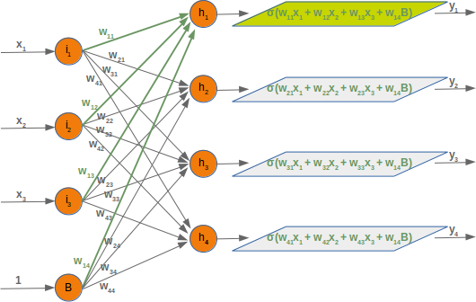

Next Chapter: Backpropagation in Neural Networks
Neural Network Using Python and Numpy
Introduction
We have introduced the basic ideas about neuronal networks in the previous chapter of our tutorial.
We pointed out the similarity between neurons and neural networks in biology. We also introduced very small articial neural networks and introduced decision boundaries and the XOR problem.
The focus in our previous chapter had not been on efficiency.
We will introduce a Neural Network class in Python in this chapter, which will use the powerful and efficient data structures of Numpy. This way, we get a more efficient network than in our previous chapter. When we say "more efficient", we do not mean that the artificial neural networks encountered in this chaper of our tutorial are efficient and ready for real life usage. They are still quite slow compared to implementations from sklearn for example. The focus is to implement a very basic neural network and by doing this explaining the basic ideas. We want to demonstrate simple and easy to grasp networks.
Ideas like how the signal flow inside of a network works, how to implement weights. how to initialize weight matrices or what activation functions can be used.
We will start with a simple neural networks consisting of three layers, i.e. the input layer, a hidden layer and an output layer.
A Simple Artificial Neural Network Structure
You can see a simple neural network structure in the following diagram. We have an input layer with three nodes These nodes get the corresponding input values . The middle or hidden layer has four nodes . The input of this layer stems from the input layer. We will discuss the mechanism soon. Finally, our output layer consists of the two nodes
We have to note that some would call this a two layer network, because they don't count the inputs as a layer.
The input layer consists of the nodes , and . In principle the input is a one-dimensional vector, like (2, 4, 11). A one-dimensional vector is represented in numpy like this:
import numpy as np input_vector = np.array([2, 4, 11]) print(input_vector)
[ 2 4 11]
In the algorithm, which we will write later, we will have to transpose it into a column vector, i.e. a two-dimensional array with just one column:
import numpy as np input_vector = np.array([2, 4, 11]) input_vector = np.array(input_vector, ndmin=2).T print(input_vector, input_vector.shape)
[[ 2] [ 4] [11]] (3, 1)
Weights and Matrices
Each of the arrows in our network diagram has an associated weight value. We will only look at the arrows between the input and the output layer now.
The value going into the node will be distributed according to the values of the weights. In the following diagram we have added some example values. Using these values, the input values ( into the nodes () of the hidden layer can be calculated like this:
Those familiar with matrices and matrix multiplication will see where it is boiling down to. We will redraw our network and denote the weights with :
In order to efficiently execute all the necessary calaculations, we will arrange the weights into a weight matrix. The weights in our diagram above build an array, which we will call 'weights_in_hidden' in our Neural Network class. The name should indicate that the weights are connecting the input and the hidden nodes, i.e. they are between the input and the hidden layer. We will also abbreviate the name as 'wih'. The weight matrix between the hidden and the output layer will be denoted as "who".:
Now that we have defined our weight matrices, we have to take the next step. We have to multiply the matrix wih the input vector. Btw. this is exactly what we have manually done in our previous example.
We have a similar situation for the 'who' matrix between hidden and output layer. So the output and from the nodes and can also be calculated with matrix multiplications:
You might have noticed that something is missing in our previous calculations. We showed in our introductory chapter Neural Networks from Scratch in Python that we have to apply an activation or step function on each of these sums.
The following picture depicts the whole flow of calculation, i.e. the matrix multiplication and the succeeding multiplication.
The matrix multiplication between the matrix wih and the matrix of the values of the input nodes calculates the output which will be passed to the activation function.
The final output is the input of the weight matrix who:
Even though treatment is completely analogue, we will also have a detailled look at what is going on between our hidden layer and the output layer:
Initializing the weight matrices
One of the important choices which have to be made before training a neural network consists in initializing the weight matrices. We don't know anything about the possible weight, when we start. So, we could start with arbitrary values?
As we have seen the input to all the nodes except the input nodes is calculated by applying the activation function to the following sum:
(with n being the number of nodes in the previous layer and is the input to a node of the next layer)
We can easily see that it would not be a good idea to set all the weight values to 0, because in this case the result of this summation will always be zero. This means that our network will be incapable of learning. This is the worst choice, but initializing a weight matrix to ones is also a bad choice.
The values for the weight matrices should be chosen randomly and not arbitrarily. By choosing a random normal distribution we have broken possible symmetric situations, which are bad for the learning process.
There are various ways to initialize the weight matrices randomly. The first one we will introduce is the unity function from numpy.random. It creates samples which are uniformly distributed over the half-open interval [low, high), which means that low is included and high is excluded. Each value within the given interval is equally likely to be drawn by 'uniform'.
import numpy as np number_of_samples = 1200 low = -1 high = 0 s = np.random.uniform(low, high, number_of_samples) # all values of s are within the half open interval [-1, 0) : print(np.all(s >= -1) and np.all(s < 0))
True
The histogram of the samples, created with the uniform function in our previous example, looks like this:
import matplotlib.pyplot as plt plt.hist(s) plt.show()
![](data:image/png;base64,iVBORw0KGgoAAAANSUhEUgAAAXoAAAD8CAYAAAB5Pm/hAAAABHNCSVQICAgIfAhkiAAAAAlwSFlz%0AAAALEgAACxIB0t1+/AAAEBhJREFUeJzt3X+MZWV9x/H3R1awaiy/Boq70MG6taKxSqcENf6IaApq%0AWNpICrF1tSSbRtraWqtYmpK0MZHaijW2pluhLI1BkGohFavbFUuaCDqI8mvV3aJdRlZ2jEJLSVTq%0At3/MWTOus3vv3nPvzM6z71cyufc85znnfJ/d2c+cfe45Z1JVSJLa9YSVLkCSNFkGvSQ1zqCXpMYZ%0A9JLUOINekhpn0EtS4wx6SWqcQS9JjTPoJalxa1a6AIDjjz++pqenV7oMSVpV7rjjjm9X1dSgfodE%0A0E9PTzM7O7vSZUjSqpLkv4bp59SNJDXOoJekxhn0ktQ4g16SGmfQS1LjDHpJapxBL0mNGxj0Sa5K%0AsifJPUuse1uSSnJ8t5wk70+yM8ldSU6fRNGSpOENc0Z/NXD2vo1JTgZeBexa1HwOsL772gR8sH+J%0AkqQ+Bt4ZW1W3JpleYtUVwNuBGxe1bQCuqYXfOH5bkqOTnFRVu8dR7KFm+pJPrMhxv/Hu16zIcSWt%0ATiPN0Sc5F/hmVX15n1VrgQcWLc91bUvtY1OS2SSz8/Pzo5QhSRrCQQd9kicDlwJ/utTqJdpqqf1U%0A1eaqmqmqmampgc/kkSSNaJSHmv0ccCrw5SQA64AvJjmDhTP4kxf1XQc82LdISdLoDvqMvqrurqoT%0Aqmq6qqZZCPfTq+pbwE3AG7qrb84EHml1fl6SVothLq+8Fvgc8Kwkc0kuOkD3m4H7gZ3A3wNvHkuV%0AkqSRDXPVzYUD1k8vel/Axf3LkiSNi3fGSlLjDHpJatwh8asEJf0kb8jTuHhGL0mNM+glqXEGvSQ1%0Azjl6rQorNV8Nzllr9fOMXpIaZ9BLUuMMeklqnEEvSY0z6CWpcQa9JDXOyyslHTJ87MNkeEYvSY0z%0A6CWpcQa9JDXOoJekxvlhrKQfs5LPFdJkeEYvSY0bGPRJrkqyJ8k9i9rek+QrSe5K8vEkRy9a984k%0AO5N8NcmvTKpwSdJwhjmjvxo4e5+2rcBzq+p5wNeAdwIkOQ24AHhOt83fJjlibNVKkg7awKCvqluB%0A7+zT9umqerxbvA1Y173fAHykqr5XVV8HdgJnjLFeSdJBGscc/W8Bn+zerwUeWLRurmuTJK2QXlfd%0AJLkUeBz48N6mJbrVfrbdBGwCOOWUU/qUcdjxty1JOhgjn9En2Qi8Fnh9Ve0N8zng5EXd1gEPLrV9%0AVW2uqpmqmpmamhq1DEnSACMFfZKzgXcA51bVY4tW3QRckOSoJKcC64HP9y9TkjSqgVM3Sa4FXg4c%0An2QOuIyFq2yOArYmAbitqn67qu5Ncj1wHwtTOhdX1f9NqnhJ0mADg76qLlyi+coD9H8X8K4+RUmS%0Axsc7YyWpcQa9JDXOoJekxvn0Sh0Un2worT6e0UtS4wx6SWqcQS9JjTPoJalxBr0kNc6gl6TGGfSS%0A1Divo5cG8N4BrXYGvaTDXuu/zMepG0lqnEEvSY0z6CWpcQa9JDXOoJekxhn0ktQ4g16SGjcw6JNc%0AlWRPknsWtR2bZGuSHd3rMV17krw/yc4kdyU5fZLFS5IGG+aM/mrg7H3aLgG2VdV6YFu3DHAOsL77%0A2gR8cDxlSpJGNTDoq+pW4Dv7NG8AtnTvtwDnLWq/phbcBhyd5KRxFStJOnijztGfWFW7AbrXE7r2%0AtcADi/rNdW2SpBUy7g9js0RbLdkx2ZRkNsns/Pz8mMuQJO01atA/tHdKpnvd07XPAScv6rcOeHCp%0AHVTV5qqaqaqZqampEcuQJA0yatDfBGzs3m8EblzU/obu6pszgUf2TvFIklbGwMcUJ7kWeDlwfJI5%0A4DLg3cD1SS4CdgHnd91vBl4N7AQeA940gZolSQdhYNBX1YX7WXXWEn0LuLhvUZKk8fHOWElqnEEv%0ASY0z6CWpcQa9JDXOoJekxhn0ktQ4g16SGmfQS1LjDHpJapxBL0mNG/gIhEPd9CWfWOkSJOmQ5hm9%0AJDXOoJekxhn0ktQ4g16SGmfQS1LjDHpJapxBL0mNM+glqXEGvSQ1zqCXpMb1Cvokf5Dk3iT3JLk2%0AyZOSnJrk9iQ7klyX5MhxFStJOngjB32StcDvATNV9VzgCOAC4HLgiqpaD3wXuGgchUqSRtN36mYN%0A8FNJ1gBPBnYDrwBu6NZvAc7reQxJUg8jB31VfRP4S2AXCwH/CHAH8HBVPd51mwPWLrV9kk1JZpPM%0Azs/Pj1qGJGmAPlM3xwAbgFOBpwNPAc5ZomsttX1Vba6qmaqamZqaGrUMSdIAfaZuXgl8varmq+oH%0AwMeAFwFHd1M5AOuAB3vWKEnqoU/Q7wLOTPLkJAHOAu4DbgFe1/XZCNzYr0RJUh995uhvZ+FD1y8C%0Ad3f72gy8A3hrkp3AccCVY6hTkjSiXr9KsKouAy7bp/l+4Iw++5UkjY93xkpS4wx6SWqcQS9JjTPo%0AJalxBr0kNc6gl6TGGfSS1DiDXpIaZ9BLUuMMeklqnEEvSY0z6CWpcQa9JDXOoJekxhn0ktQ4g16S%0AGmfQS1LjDHpJapxBL0mNM+glqXG9gj7J0UluSPKVJNuTvDDJsUm2JtnRvR4zrmIlSQev7xn9XwP/%0AWlW/APwisB24BNhWVeuBbd2yJGmFjBz0SZ4GvBS4EqCqvl9VDwMbgC1dty3AeX2LlCSNrs8Z/TOA%0AeeAfktyZ5ENJngKcWFW7AbrXE8ZQpyRpRH2Cfg1wOvDBqnoB8L8cxDRNkk1JZpPMzs/P9yhDknQg%0AfYJ+Dpirqtu75RtYCP6HkpwE0L3uWWrjqtpcVTNVNTM1NdWjDEnSgYwc9FX1LeCBJM/qms4C7gNu%0AAjZ2bRuBG3tVKEnqZU3P7X8X+HCSI4H7gTex8MPj+iQXAbuA83seQ5LUQ6+gr6ovATNLrDqrz34l%0ASePjnbGS1DiDXpIaZ9BLUuMMeklqnEEvSY0z6CWpcQa9JDXOoJekxhn0ktQ4g16SGmfQS1LjDHpJ%0AapxBL0mNM+glqXEGvSQ1zqCXpMYZ9JLUOINekhpn0EtS4wx6SWpc76BPckSSO5P8S7d8apLbk+xI%0Acl2SI/uXKUka1TjO6N8CbF+0fDlwRVWtB74LXDSGY0iSRtQr6JOsA14DfKhbDvAK4IauyxbgvD7H%0AkCT10/eM/n3A24EfdsvHAQ9X1ePd8hywtucxJEk9jBz0SV4L7KmqOxY3L9G19rP9piSzSWbn5+dH%0ALUOSNECfM/oXA+cm+QbwERambN4HHJ1kTddnHfDgUhtX1eaqmqmqmampqR5lSJIOZOSgr6p3VtW6%0AqpoGLgA+U1WvB24BXtd12wjc2LtKSdLIJnEd/TuAtybZycKc/ZUTOIYkaUhrBncZrKo+C3y2e38/%0AcMY49itJ6s87YyWpcQa9JDXOoJekxhn0ktQ4g16SGmfQS1LjDHpJapxBL0mNM+glqXEGvSQ1zqCX%0ApMYZ9JLUOINekhpn0EtS4wx6SWqcQS9JjTPoJalxBr0kNc6gl6TGGfSS1DiDXpIaN3LQJzk5yS1J%0Atie5N8lbuvZjk2xNsqN7PWZ85UqSDlafM/rHgT+sqmcDZwIXJzkNuATYVlXrgW3dsiRphYwc9FW1%0Au6q+2L3/H2A7sBbYAGzpum0BzutbpCRpdGOZo08yDbwAuB04sap2w8IPA+CE/WyzKclsktn5+flx%0AlCFJWkLvoE/yVOCfgN+vqv8edruq2lxVM1U1MzU11bcMSdJ+9Ar6JE9kIeQ/XFUf65ofSnJSt/4k%0AYE+/EiVJffS56ibAlcD2qnrvolU3ARu79xuBG0cvT5LU15oe274Y+E3g7iRf6tr+GHg3cH2Si4Bd%0AwPn9SpQk9TFy0FfVfwDZz+qzRt2vJGm8vDNWkhpn0EtS4wx6SWqcQS9JjTPoJalxBr0kNc6gl6TG%0AGfSS1DiDXpIaZ9BLUuMMeklqnEEvSY0z6CWpcQa9JDXOoJekxhn0ktQ4g16SGmfQS1LjDHpJapxB%0AL0mNm1jQJzk7yVeT7ExyyaSOI0k6sIkEfZIjgL8BzgFOAy5MctokjiVJOrBJndGfAeysqvur6vvA%0AR4ANEzqWJOkAJhX0a4EHFi3PdW2SpGW2ZkL7zRJt9WMdkk3Apm7x0SRfHfFYxwPfHnHb1coxHx4c%0A82Egl/ca888O02lSQT8HnLxoeR3w4OIOVbUZ2Nz3QElmq2qm735WE8d8eHDMh4flGPOkpm6+AKxP%0AcmqSI4ELgJsmdCxJ0gFM5Iy+qh5P8jvAp4AjgKuq6t5JHEuSdGCTmrqhqm4Gbp7U/hfpPf2zCjnm%0Aw4NjPjxMfMypqsG9JEmrlo9AkKTGrbqgT3J+knuT/DDJfj+pbukRDEmOTbI1yY7u9Zj99PuL7s9m%0Ae5L3J1nqMtdV4SDGfEqST3djvi/J9PJWOj7Djrnr+7Qk30zygeWscdyGGXOS5yf5XPe9fVeSX1+J%0AWvsalElJjkpyXbf+9nF+L6+6oAfuAX4NuHV/HRp8BMMlwLaqWg9s65Z/TJIXAS8Gngc8F/hl4GXL%0AWeSYDRxz5xrgPVX1bBbuyN6zTPVNwrBjBvhz4N+XparJGmbMjwFvqKrnAGcD70ty9DLW2NuQmXQR%0A8N2qeiZwBXD5uI6/6oK+qrZX1aCbq1p7BMMGYEv3fgtw3hJ9CngScCRwFPBE4KFlqW4yBo65+4ey%0Apqq2AlTVo1X12PKVOHbD/D2T5JeAE4FPL1NdkzRwzFX1tara0b1/kIUf5lPLVuF4DJNJi/8sbgDO%0AGtf/yldd0A+ptUcwnFhVuwG61xP27VBVnwNuAXZ3X5+qqu3LWuV4DRwz8PPAw0k+luTOJO/pzpxW%0Aq4FjTvIE4K+AP1rm2iZlmL/nH0lyBgsnM/+5DLWN0zCZ9KM+VfU48Ahw3DgOPrHLK/tI8m/Azyyx%0A6tKqunGYXSzRdkhfXnSgMQ+5/TOBZ7NwFzLA1iQvrar9TnGttL5jZuH79yXAC4BdwHXAG4Erx1Hf%0AJIxhzG8Gbq6qB1bLRzBjGPPe/ZwE/COwsap+OI7altEwmTSx3Dokg76qXtlzFwMfwXCoOdCYkzyU%0A5KSq2t19sy81D/2rwG1V9Wi3zSeBMznAZxkrbQxjngPurKr7u23+mYUxH7JBP4YxvxB4SZI3A08F%0AjkzyaFUdshccjGHMJHka8AngT6rqtgmVOknDZNLePnNJ1gA/DXxnHAdvdeqmtUcw3ARs7N5vBJb6%0AX80u4GVJ1iR5IgsfxK7mqZthxvwF4Jgke+drXwHctwy1TcrAMVfV66vqlKqaBt4GXHMoh/wQBo65%0A+zf8cRbG+tFlrG2chsmkxX8WrwM+U+O60amqVtUXC2euc8D3WPiw8VNd+9NZ+C/t3n6vBr7Gwlze%0ApStdd88xH8fCFQk7utdju/YZ4EPd+yOAv2Mh3O8D3rvSdU96zN3yq4C7gLuBq4EjV7r2SY95Uf83%0AAh9Y6bonPWbgN4AfAF9a9PX8la59hLH+RCYBfwac271/EvBRYCfweeAZ4zq2d8ZKUuNanbqRJHUM%0AeklqnEEvSY0z6CWpcQa9JDXOoJekxhn0ktQ4g16SGvf/qxDrOVu60REAAAAASUVORK5CYII=)
The next function we will look at is 'binomial' from numpy.binomial:
binomial(n, p, size=None)
It draws samples from a binomial distribution with specified parameters, n trials and p probability of success where n is an integer >= 0 and p is a float in the interval [0,1]. (n may be input as a float, but it is truncated to an integer in use)
s = np.random.binomial(100, 0.5, 1200) plt.hist(s) plt.show()
![](data:image/png;base64,iVBORw0KGgoAAAANSUhEUgAAAXoAAAD8CAYAAAB5Pm/hAAAABHNCSVQICAgIfAhkiAAAAAlwSFlz%0AAAALEgAACxIB0t1+/AAAEWZJREFUeJzt3X+MZWddx/H3x7YUguhSOm3W3cWtuIpIwpaMtaaJwRa1%0AtMYtiTUlCpU0WUyKwcQfbP1HSGxSErFKok0WW1gUKZsi6QYqWgvE8ActU1hK24WwwkqHXbujtEgl%0A1rR8/eM+o+P2zsydH3fvzLPvV3Jzz3nOc+75zpPZzz37zDn3pqqQJPXr+yZdgCRpvAx6SeqcQS9J%0AnTPoJalzBr0kdc6gl6TOGfSS1DmDXpI6Z9BLUufOnnQBAOeff37t3Llz0mVI0qby4IMP/ltVTS3X%0Ab0ME/c6dO5mZmZl0GZK0qST5l1H6OXUjSZ0z6CWpcwa9JHXOoJekzi0b9Emen+SBJF9M8kiSd7b2%0A9yf5epLD7bG7tSfJe5IcTfJQkleP+4eQJC1ulKtungYur6qnkpwDfCbJ37Vtv1dVd53S/3XArvb4%0AaeC29ixJmoBlz+hr4Km2ek57LPW1VHuAD7T9PgtsSbJ17aVKklZjpDn6JGclOQycBO6tqvvbppvb%0A9MytSc5tbduAxxbsPtvaJEkTMFLQV9WzVbUb2A5ckuSVwE3Ay4GfAs4D3t66Z9hLnNqQZG+SmSQz%0Ac3NzqypekrS8Fd0ZW1VPJvk0cGVV/XFrfjrJ+4DfbeuzwI4Fu20Hjg95rf3AfoDp6Wm/oVwb1s59%0AH5/IcY/dcvVEjqv+jHLVzVSSLW35BcBrgS/Pz7snCXAN8HDb5RDwpnb1zaXAt6vqxFiqlyQta5Qz%0A+q3AgSRnMXhjOFhVH0vyySRTDKZqDgO/2frfA1wFHAW+C7x5/cuWJI1q2aCvqoeAi4e0X75I/wJu%0AXHtpkqT14J2xktQ5g16SOmfQS1LnDHpJ6pxBL0mdM+glqXMGvSR1zqCXpM4Z9JLUOYNekjpn0EtS%0A5wx6SeqcQS9JnTPoJalzBr0kdc6gl6TOGfSS1DmDXpI6Z9BLUucMeknqnEEvSZ1bNuiTPD/JA0m+%0AmOSRJO9s7RcluT/JV5N8OMnzWvu5bf1o275zvD+CJGkpo5zRPw1cXlWvAnYDVya5FHgXcGtV7QKe%0AAG5o/W8AnqiqHwVubf0kSROybNDXwFNt9Zz2KOBy4K7WfgC4pi3vaeu07VckybpVLElakZHm6JOc%0AleQwcBK4F/hn4MmqeqZ1mQW2teVtwGMAbfu3gZcMec29SWaSzMzNza3tp5AkLWqkoK+qZ6tqN7Ad%0AuAT4iWHd2vOws/d6TkPV/qqarqrpqampUeuVJK3Qiq66qaongU8DlwJbkpzdNm0HjrflWWAHQNv+%0Ag8C31qNYSdLKjXLVzVSSLW35BcBrgSPAp4Bfad2uB+5uy4faOm37J6vqOWf0kqTT4+zlu7AVOJDk%0ALAZvDAer6mNJHgXuTPJHwBeA21v/24G/SnKUwZn8dWOoW5I0omWDvqoeAi4e0v41BvP1p7b/F3Dt%0AulQnSVoz74yVpM4Z9JLUOYNekjpn0EtS5wx6SeqcQS9JnTPoJalzBr0kdc6gl6TOGfSS1DmDXpI6%0AZ9BLUucMeknqnEEvSZ0z6CWpcwa9JHXOoJekzhn0ktQ5g16SOmfQS1Lnlg36JDuSfCrJkSSPJHlb%0Aa39Hkm8mOdweVy3Y56YkR5N8JckvjvMHkCQt7ewR+jwD/E5VfT7Ji4AHk9zbtt1aVX+8sHOSVwDX%0AAT8J/BDwj0l+rKqeXc/CJUmjWfaMvqpOVNXn2/J3gCPAtiV22QPcWVVPV9XXgaPAJetRrCRp5VY0%0AR59kJ3AxcH9remuSh5LckeTFrW0b8NiC3WZZ+o1BkjRGIwd9ku8HPgL8dlX9B3Ab8DJgN3ACePd8%0A1yG715DX25tkJsnM3NzciguXJI1mpKBPcg6DkP9gVf0tQFU9XlXPVtX3gPfyf9Mzs8COBbtvB46f%0A+ppVtb+qpqtqempqai0/gyRpCaNcdRPgduBIVf3JgvatC7q9Hni4LR8CrktybpKLgF3AA+tXsiRp%0AJUa56uYy4I3Al5Icbm1/ALwhyW4G0zLHgLcAVNUjSQ4CjzK4YudGr7iRpMlZNuir6jMMn3e/Z4l9%0AbgZuXkNdkqR1MsoZvTRxO/d9fNIlSJuWH4EgSZ0z6CWpcwa9JHXOoJekzhn0ktQ5g16SOmfQS1Ln%0ADHpJ6pw3TEkb1KRuEjt2y9UTOa7GxzN6SeqcQS9JnTPoJalzBr0kdc6gl6TOGfSS1DmDXpI6Z9BL%0AUucMeknqnEEvSZ0z6CWpc8sGfZIdST6V5EiSR5K8rbWfl+TeJF9tzy9u7UnyniRHkzyU5NXj/iEk%0ASYsb5Yz+GeB3quongEuBG5O8AtgH3FdVu4D72jrA64Bd7bEXuG3dq5YkjWzZoK+qE1X1+bb8HeAI%0AsA3YAxxo3Q4A17TlPcAHauCzwJYkW9e9cknSSFY0R59kJ3AxcD9wYVWdgMGbAXBB67YNeGzBbrOt%0ATZI0ASMHfZLvBz4C/HZV/cdSXYe01ZDX25tkJsnM3NzcqGVIklZopKBPcg6DkP9gVf1ta358fkqm%0APZ9s7bPAjgW7bweOn/qaVbW/qqaranpqamq19UuSljHKVTcBbgeOVNWfLNh0CLi+LV8P3L2g/U3t%0A6ptLgW/PT/FIkk6/Ub5K8DLgjcCXkhxubX8A3AIcTHID8A3g2rbtHuAq4CjwXeDN61qxJGlFlg36%0AqvoMw+fdAa4Y0r+AG9dYlyRpnXhnrCR1zqCXpM4Z9JLUOYNekjpn0EtS5wx6SeqcQS9JnTPoJalz%0ABr0kdc6gl6TOGfSS1DmDXpI6Z9BLUucMeknqnEEvSZ0z6CWpcwa9JHXOoJekzhn0ktQ5g16SOmfQ%0AS1Lnlg36JHckOZnk4QVt70jyzSSH2+OqBdtuSnI0yVeS/OK4CpckjWaUM/r3A1cOab+1qna3xz0A%0ASV4BXAf8ZNvnL5KctV7FSpJWbtmgr6p/Ar414uvtAe6sqqer6uvAUeCSNdQnSVqjtczRvzXJQ21q%0A58WtbRvw2II+s61NkjQhqw3624CXAbuBE8C7W3uG9K1hL5Bkb5KZJDNzc3OrLEOStJxVBX1VPV5V%0Az1bV94D38n/TM7PAjgVdtwPHF3mN/VU1XVXTU1NTqylDkjSCVQV9kq0LVl8PzF+Rcwi4Lsm5SS4C%0AdgEPrK1ESdJanL1chyQfAl4DnJ9kFvhD4DVJdjOYljkGvAWgqh5JchB4FHgGuLGqnh1P6ZKkUSwb%0A9FX1hiHNty/R/2bg5rUUpY1r576PT7oESSvknbGS1DmDXpI6Z9BLUucMeknqnEEvSZ0z6CWpcwa9%0AJHXOoJekzhn0ktQ5g16SOmfQS1LnDHpJ6pxBL0mdM+glqXMGvSR1zqCXpM4Z9JLUOYNekjpn0EtS%0A5wx6SeqcQS9JnTt7uQ5J7gB+CThZVa9sbecBHwZ2AseAX62qJ5IE+DPgKuC7wG9U1efHU7qkcdi5%0A7+MTO/axW66e2LF7NsoZ/fuBK09p2wfcV1W7gPvaOsDrgF3tsRe4bX3KlCSt1rJBX1X/BHzrlOY9%0AwIG2fAC4ZkH7B2rgs8CWJFvXq1hJ0sqtdo7+wqo6AdCeL2jt24DHFvSbbW3PkWRvkpkkM3Nzc6ss%0AQ5K0nPX+Y2yGtNWwjlW1v6qmq2p6ampqncuQJM1bbdA/Pj8l055PtvZZYMeCftuB46svT5K0VqsN%0A+kPA9W35euDuBe1vysClwLfnp3gkSZMxyuWVHwJeA5yfZBb4Q+AW4GCSG4BvANe27vcwuLTyKIPL%0AK988hpolSSuwbNBX1RsW2XTFkL4F3LjWoiRJ68c7YyWpcwa9JHXOoJekzhn0ktQ5g16SOmfQS1Ln%0ADHpJ6pxBL0mdM+glqXMGvSR1zqCXpM4t+1k32ngm+Z2ekjYfz+glqXMGvSR1zqCXpM4Z9JLUOYNe%0Akjpn0EtS5wx6SeqcQS9JnVvTDVNJjgHfAZ4Fnqmq6STnAR8GdgLHgF+tqifWVqYkabXW44z+56pq%0Ad1VNt/V9wH1VtQu4r61LkiZkHFM3e4ADbfkAcM0YjiFJGtFag76Af0jyYJK9re3CqjoB0J4vWOMx%0AJElrsNYPNbusqo4nuQC4N8mXR92xvTHsBXjpS1+6xjIkSYtZ0xl9VR1vzyeBjwKXAI8n2QrQnk8u%0Asu/+qpququmpqam1lCFJWsKqgz7JC5O8aH4Z+AXgYeAQcH3rdj1w91qLlCSt3lqmbi4EPppk/nX+%0Apqo+keRzwMEkNwDfAK5de5mSpNVaddBX1deAVw1p/3fgirUUJUlaP37DlKQNY1LfnnbslqsnctzT%0AxY9AkKTOGfSS1DmDXpI6Z9BLUucMeknqnEEvSZ0z6CWpcwa9JHXOoJekzhn0ktQ5g16SOmfQS1Ln%0ADHpJ6pxBL0mdM+glqXMGvSR1zqCXpM75DVOSzniT+mYrOD3fbuUZvSR1zjP6NZjkWYAkjWpsZ/RJ%0ArkzylSRHk+wb13EkSUsbyxl9krOAPwd+HpgFPpfkUFU9ut7H8qxakpY2rjP6S4CjVfW1qvpv4E5g%0Az5iOJUlawriCfhvw2IL12dYmSTrNxvXH2Axpq//XIdkL7G2rTyX5yphqWYnzgX+bdBFrYP2Ts5lr%0Ah81d/2aunbxrTfX/8CidxhX0s8COBevbgeMLO1TVfmD/mI6/Kklmqmp60nWslvVPzmauHTZ3/Zu5%0Adjg99Y9r6uZzwK4kFyV5HnAdcGhMx5IkLWEsZ/RV9UyStwJ/D5wF3FFVj4zjWJKkpY3thqmquge4%0AZ1yvPyYbaippFax/cjZz7bC569/MtcNpqD9VtXwvSdKm5WfdSFLnztigT/L8JA8k+WKSR5K8s7W/%0AP8nXkxxuj92TrnUxSc5K8oUkH2vrFyW5P8lXk3y4/SF8wxpS/2Ya+2NJvtTqnGlt5yW5t43/vUle%0APOk6h1mk9nck+eaCsb9q0nUuJsmWJHcl+XKSI0l+ZhON/bDaxz72Z2zQA08Dl1fVq4DdwJVJLm3b%0Afq+qdrfH4cmVuKy3AUcWrL8LuLWqdgFPADdMpKrRnVo/bJ6xB/i5Vuf8pXH7gPva+N/X1jeqU2uH%0Awe/O/Nhv5L+v/Rnwiap6OfAqBr9Dm2Xsh9UOYx77Mzboa+CptnpOe2yaP1gk2Q5cDfxlWw9wOXBX%0A63IAuGYy1S3v1Po7sYfBuMMGH//NKskPAD8L3A5QVf9dVU+yCcZ+idrH7owNevjfqYPDwEng3qq6%0Av226OclDSW5Ncu4ES1zKnwK/D3yvrb8EeLKqnmnrG/1jJ06tf95mGHsYnBT8Q5IH213eABdW1QmA%0A9nzBxKpb2rDaAd7axv6OjTr1AfwIMAe8r037/WWSF7I5xn6x2mHMY39GB31VPVtVuxncuXtJklcC%0ANwEvB34KOA94+wRLHCrJLwEnq+rBhc1Dum7I/6EsUj9sgrFf4LKqejXwOuDGJD876YJWYFjttwEv%0AYzCNeQJ49wTrW8rZwKuB26rqYuA/2bjTNKdarPaxj/0ZHfTz2n+fPg1cWVUn2rTO08D7GHwS50Zz%0AGfDLSY4x+GTQyxmcIW9JMn9vxHM+dmIDeU79Sf56k4w9AFV1vD2fBD7KoNbHk2wFaM8nJ1fh4obV%0AXlWPtxOf7wHvZeOO/Swwu+B/33cxCM/NMPZDaz8dY3/GBn2SqSRb2vILgNcCX17wyxIG83wPT67K%0A4arqpqraXlU7GXy8xCer6teATwG/0rpdD9w9oRKXtEj9v74Zxh4gyQuTvGh+GfgFBrUeYjDusEHH%0Af7Ha58e+eT0bdOyr6l+Bx5L8eGu6AniUTTD2i9V+Osb+TP4qwa3AgQy+JOX7gINV9bEkn0wyxWAq%0A5DDwm5MscoXeDtyZ5I+AL9D+6LOJfHCTjP2FwEcH70ecDfxNVX0iyeeAg0luAL4BXDvBGhezWO1/%0A1S5nLeAY8JbJlbis32Lwu/I84GvAm2n/hjf42MPw2t8z7rH3zlhJ6twZO3UjSWcKg16SOmfQS1Ln%0ADHpJ6pxBL0mdM+glqXMGvSR1zqCXpM79D1jLP19MJIflAAAAAElFTkSuQmCC)
We like to create random numbers with a normal distribution, but the numbers have to be bounded. This is not the case with np.random.normal(), because it doesn't offer any bound parameter.
We can use truncnorm from scipy.stats for this purpose.
The standard form of this distribution is a standard normal truncated to the range [a, b] — notice that a and b are defined over the domain of the standard normal. To convert clip values for a specific mean and standard deviation, use:
a, b = (myclip_a - my_mean) / my_std, (myclip_b - my_mean) / my_std
from scipy.stats import truncnorm s = truncnorm(a=-2/3., b=2/3., scale=1, loc=0).rvs(size=1000) plt.hist(s) plt.show()
![](data:image/png;base64,iVBORw0KGgoAAAANSUhEUgAAAXoAAAD8CAYAAAB5Pm/hAAAABHNCSVQICAgIfAhkiAAAAAlwSFlz%0AAAALEgAACxIB0t1+/AAADplJREFUeJzt3X2sZHddx/H3h15X5KF2y96WpS1uSbZqQyLFm6ZIEKSQ%0AUDC0fxQtAV1I4yaCiuIDq5iQ6D/UBxADQTcUWAxgoSLdQFXK0gY1buWWYku7wi5F26Vr9xJoFYlC%0Aw9c/5iy5LvfuzM6Zh72/fb+Sycw585s5nzuZ/dzfPXPmbKoKSVK7HjPvAJKk6bLoJalxFr0kNc6i%0Al6TGWfSS1DiLXpIaZ9FLUuMseklqnEUvSY1bmHcAgC1bttS2bdvmHUOSNpQ77rjjq1W1OGzcKVH0%0A27ZtY3l5ed4xJGlDSfLvo4xz140kNc6il6TGWfSS1DiLXpIaZ9FLUuMseklqnEUvSY2z6CWpcRa9%0AJDXulPhmrE7Otl0fn9u2/+3NL5nLduf1M8/r55UmyRm9JDXOopekxrnrpod57kKRpFE5o5ekxln0%0AktQ4i16SGmfRS1LjLHpJapxFL0mNs+glqXEeR6+T4ncHpI3HGb0kNc6il6TGWfSS1LihRZ/k3UmO%0AJvn8qnVnJ7klycHuenO3Pkn+NMmhJHcleeY0w0uShhtlRv9e4EXHrdsF7Kuq7cC+bhngCmB7d9kJ%0AvHMyMSVJ4xpa9FX1aeBrx62+EtjT3d4DXLVq/ftqYD9wVpKtkworSTp54+6jP7eqjgB01+d0688D%0AHlg17nC3TpI0J5P+MDZrrKs1ByY7kywnWV5ZWZlwDEnSMeN+YeqhJFur6ki3a+Zot/4wcMGqcecD%0AD671BFW1G9gNsLS0tOYvA0mzdzr+n8StG3dGvxfY0d3eAdy0av3Pd0ffXAY8cmwXjyRpPobO6JN8%0AEHgesCXJYeBNwJuBDyW5FrgfeFk3/GbgxcAh4JvAq6eQWZJ0EoYWfVW9fJ27Ll9jbAGv7RtKkjQ5%0AfjNWkhpn0UtS4zxNsaRTxryO+Gn9aB9n9JLUOGf00gl4TLla4Ixekhq34Wf0/td2kvpq/S83Z/SS%0A1DiLXpIaZ9FLUuMseklqnEUvSY2z6CWpcRv+8EqpVR46rElxRi9JjbPoJalxFr0kNc6il6TGWfSS%0A1DiLXpIaZ9FLUuMseklqnEUvSY2z6CWpcRa9JDXOopekxln0ktQ4i16SGmfRS1LjehV9kl9Lck+S%0Azyf5YJLHJrkwye1JDia5IcmmSYWVJJ28sYs+yXnArwBLVfV04AzgGuA64K1VtR34OnDtJIJKksbT%0Ad9fNAvADSRaAxwFHgOcDN3b37wGu6rkNSVIPYxd9VX0F+CPgfgYF/whwB/BwVT3aDTsMnLfW45Ps%0ATLKcZHllZWXcGJKkIfrsutkMXAlcCDwFeDxwxRpDa63HV9XuqlqqqqXFxcVxY0iShuiz6+YFwJer%0AaqWqvg18BPgJ4KxuVw7A+cCDPTNKknroU/T3A5cleVySAJcD9wK3Ald3Y3YAN/WLKEnqo88++tsZ%0AfOj6WeDu7rl2A28AXp/kEPAk4PoJ5JQkjWlh+JD1VdWbgDcdt/o+4NI+zytJmhy/GStJjbPoJalx%0AFr0kNc6il6TGWfSS1DiLXpIaZ9FLUuMseklqnEUvSY2z6CWpcRa9JDXOopekxln0ktQ4i16SGmfR%0AS1LjLHpJapxFL0mNs+glqXEWvSQ1zqKXpMZZ9JLUOItekhpn0UtS4yx6SWqcRS9JjbPoJalxFr0k%0ANc6il6TG9Sr6JGcluTHJvyY5kORZSc5OckuSg9315kmFlSSdvL4z+rcBf1tVPwL8GHAA2AXsq6rt%0AwL5uWZI0J2MXfZIzgZ8Ergeoqm9V1cPAlcCebtge4Kq+ISVJ4+szo38asAK8J8mdSd6V5PHAuVV1%0ABKC7PmcCOSVJY+pT9AvAM4F3VtUlwH9zErtpkuxMspxkeWVlpUcMSdKJ9Cn6w8Dhqrq9W76RQfE/%0AlGQrQHd9dK0HV9XuqlqqqqXFxcUeMSRJJzJ20VfVfwAPJPnhbtXlwL3AXmBHt24HcFOvhJKkXhZ6%0APv6Xgfcn2QTcB7yawS+PDyW5FrgfeFnPbUiSeuhV9FX1OWBpjbsu7/O8kqTJ8ZuxktQ4i16SGmfR%0AS1LjLHpJapxFL0mNs+glqXEWvSQ1zqKXpMZZ9JLUOItekhpn0UtS4yx6SWqcRS9JjbPoJalxFr0k%0ANc6il6TGWfSS1DiLXpIaZ9FLUuMseklqnEUvSY2z6CWpcRa9JDXOopekxln0ktQ4i16SGmfRS1Lj%0ALHpJapxFL0mN6130Sc5IcmeSj3XLFya5PcnBJDck2dQ/piRpXJOY0b8OOLBq+TrgrVW1Hfg6cO0E%0AtiFJGlOvok9yPvAS4F3dcoDnAzd2Q/YAV/XZhiSpn74z+j8Bfgv4Trf8JODhqnq0Wz4MnLfWA5Ps%0ATLKcZHllZaVnDEnSesYu+iQ/DRytqjtWr15jaK31+KraXVVLVbW0uLg4bgxJ0hALPR77bOClSV4M%0APBY4k8EM/6wkC92s/nzgwf4xJUnjGntGX1W/XVXnV9U24BrgU1X1CuBW4Opu2A7gpt4pJUljm8Zx%0A9G8AXp/kEIN99tdPYRuSpBH12XXzXVV1G3Bbd/s+4NJJPK8kqT+/GStJjbPoJalxFr0kNc6il6TG%0AWfSS1DiLXpIaZ9FLUuMseklqnEUvSY2z6CWpcRa9JDXOopekxln0ktQ4i16SGmfRS1LjLHpJapxF%0AL0mNs+glqXEWvSQ1zqKXpMZZ9JLUOItekhpn0UtS4yx6SWqcRS9JjbPoJalxFr0kNc6il6TGjV30%0ASS5IcmuSA0nuSfK6bv3ZSW5JcrC73jy5uJKkk9VnRv8o8OtV9aPAZcBrk1wM7AL2VdV2YF+3LEma%0Ak7GLvqqOVNVnu9v/BRwAzgOuBPZ0w/YAV/UNKUka30T20SfZBlwC3A6cW1VHYPDLADhnEtuQJI2n%0Ad9EneQLwV8CvVtV/nsTjdiZZTrK8srLSN4YkaR29ij7J9zEo+fdX1Ue61Q8l2drdvxU4utZjq2p3%0AVS1V1dLi4mKfGJKkE+hz1E2A64EDVfWWVXftBXZ0t3cAN40fT5LU10KPxz4b+Dng7iSf69b9DvBm%0A4ENJrgXuB17WL6IkqY+xi76q/gHIOndfPu7zSpImy2/GSlLjLHpJapxFL0mNs+glqXEWvSQ1zqKX%0ApMZZ9JLUOItekhpn0UtS4yx6SWqcRS9JjbPoJalxFr0kNc6il6TGWfSS1DiLXpIaZ9FLUuMseklq%0AnEUvSY2z6CWpcRa9JDXOopekxln0ktQ4i16SGmfRS1LjLHpJapxFL0mNs+glqXEWvSQ1bipFn+RF%0ASb6Q5FCSXdPYhiRpNBMv+iRnAO8ArgAuBl6e5OJJb0eSNJppzOgvBQ5V1X1V9S3gL4Erp7AdSdII%0AplH05wEPrFo+3K2TJM3BwhSeM2usq+8ZlOwEdnaL30jyhSlkGWYL8NU5bLcvc8/ORswM5p6lXplz%0AXa9t/9Aog6ZR9IeBC1Ytnw88ePygqtoN7J7C9keWZLmqluaZYRzmnp2NmBnMPUsbIfM0dt18Btie%0A5MIkm4BrgL1T2I4kaQQTn9FX1aNJfgn4O+AM4N1Vdc+ktyNJGs00dt1QVTcDN0/juSdsrruOejD3%0A7GzEzGDuWTrlM6fqez4nlSQ1xFMgSFLjTquiT3J2kluSHOyuN68z7qlJPpHkQJJ7k2ybbdLvyTNS%0A7m7smUm+kuTts8y4TpahuZM8I8k/JbknyV1JfnZOWU942o4k35/khu7+2+f9njhmhNyv797DdyXZ%0Al2Skw/GmbdTTpCS5OkklmftRLaNkTvIz3et9T5IPzDrjuqrqtLkAfwDs6m7vAq5bZ9xtwAu7208A%0AHrcRcnf3vw34APD2jfB6AxcB27vbTwGOAGfNOOcZwJeApwGbgH8BLj5uzGuAP+tuXwPccAq8vqPk%0A/qlj71/gFzdK7m7cE4FPA/uBpVM9M7AduBPY3C2fM+/X+tjltJrRMzgVw57u9h7gquMHdOflWaiq%0AWwCq6htV9c3ZRVzT0NwASX4cOBf4xIxyDTM0d1V9saoOdrcfBI4CizNLODDKaTtW/yw3ApcnWevL%0AgbM0NHdV3brq/bufwfda5m3U06T8PoPJwv/MMtw6Rsn8C8A7qurrAFV1dMYZ13W6Ff25VXUEoLs+%0AZ40xFwEPJ/lIkjuT/GF3orZ5Gpo7yWOAPwZ+c8bZTmSU1/u7klzKYLb0pRlkW22U03Z8d0xVPQo8%0AAjxpJunWd7KnG7kW+JupJhrN0NxJLgEuqKqPzTLYCYzyWl8EXJTkH5PsT/KimaUbYiqHV85Tkk8C%0AT17jrjeO+BQLwHOAS4D7gRuAVwHXTyLfeiaQ+zXAzVX1wCwnmhPIfex5tgJ/Aeyoqu9MItvJbH6N%0AdccfjjbSqT1mbORMSV4JLAHPnWqi0ZwwdzdpeSuDf3enilFe6wUGu2+ex+Avp79P8vSqenjK2YZq%0Aruir6gXr3ZfkoSRbq+pIVyxr/Wl1GLizqu7rHvNR4DKmXPQTyP0s4DlJXsPgc4VNSb5RVVP9/wAm%0AkJskZwIfB363qvZPKeqJjHLajmNjDidZAH4Q+Nps4q1rpNONJHkBg1+8z62q/51RthMZlvuJwNOB%0A27pJy5OBvUleWlXLM0v5/436HtlfVd8Gvtydv2s7g7MFzNXptutmL7Cju70DuGmNMZ8BNic5tp/4%0A+cC9M8h2IkNzV9UrquqpVbUN+A3gfdMu+REMzd2dJuOvGeT98AyzrTbKaTtW/yxXA5+q7hO3ORqa%0Au9sF8ufAS0+hfcYnzF1Vj1TVlqra1r2f9zPIP6+Sh9HeIx9l8OE3SbYw2JVz30xTrmfenwbP8sJg%0An+o+4GB3fXa3fgl416pxLwTuAu4G3gts2gi5V41/FafGUTdDcwOvBL4NfG7V5RlzyPpi4IsMPh94%0AY7fu9xgUDMBjgQ8Dh4B/Bp4279d3xNyfBB5a9drunXfmUXIfN/Y25nzUzYivdYC3MJgY3g1cM+/M%0Axy5+M1aSGne67bqRpNOORS9JjbPoJalxFr0kNc6il6TGWfSS1DiLXpIaZ9FLUuP+DycK6bT92+r3%0AAAAAAElFTkSuQmCC)
The function 'truncnorm' is difficult to use. To make life easier, we define a function 'truncated_normal' in the following to fascilitate this task:
def truncated_normal(mean=0, sd=1, low=0, upp=10): return truncnorm( (low - mean) / sd, (upp - mean) / sd, loc=mean, scale=sd) X = truncated_normal(mean=0, sd=0.4, low=-0.5, upp=0.5) s = X.rvs(10000) plt.hist(s) plt.show()
![](data:image/png;base64,iVBORw0KGgoAAAANSUhEUgAAAYAAAAD8CAYAAAB+UHOxAAAABHNCSVQICAgIfAhkiAAAAAlwSFlz%0AAAALEgAACxIB0t1+/AAAEGxJREFUeJzt3X+MZWV9x/H3R7bQ+hOEAXF326Fx0xaJVTuhtKZqxB8g%0AhuUPsFBbVtxk04jVlv5wrU1INCZYW9GmlnQD1KWxAlING8EqXbCmSaEOalCguFOk7LhUxoC0lqil%0AfvvHPFunyzAzzL1z7y7P+5VM7jnP+d57vs9uZj5zzj33TKoKSVJ/njbuBiRJ42EASFKnDABJ6pQB%0AIEmdMgAkqVMGgCR1ygCQpE4ZAJLUKQNAkjq1btwNLOWYY46pycnJcbchSYeU22+//dtVNbFc3UEd%0AAJOTk0xPT4+7DUk6pCT5t5XUeQpIkjplAEhSpwwASeqUASBJnTIAJKlTBoAkdcoAkKROGQCS1CkD%0AQJI6dVB/ElhazuT2G8a27/suOWNs+5aGwSMASeqUASBJnTIAJKlTvgcgrdK43n/wvQcNi0cAktQp%0AA0CSOmUASFKnDABJ6pQBIEmdMgAkqVPLBkCSK5M8mORrC8Y+kORfktyR5FNJjlyw7V1JZpLck+R1%0AC8ZPa2MzSbYPfyqSpCdjJUcAHwVOO2DsJuCkqnoR8HXgXQBJTgTOBV7YnvMXSQ5LchjwEeB04ETg%0AvFYrSRqTZQOgqr4APHTA2Oeq6rG2eiuwoS1vBq6uqu9X1TeAGeDk9jVTVfdW1Q+Aq1utJGlMhvEe%0AwFuAz7Tl9cDeBdtm29gTjUuSxmSgAEjybuAx4GP7hxYpqyXGF3vNbUmmk0zPzc0N0p4kaQmrDoAk%0AW4A3AG+qqv0/zGeBjQvKNgD7lhh/nKraUVVTVTU1MTGx2vYkSctY1c3gkpwGvBN4RVU9umDTLuBv%0AknwQeD6wCfhn5o8ANiU5Afgm828U/9ogjevgMs4/zNIb/wiOhmXZAEjyceCVwDFJZoGLmb/q5wjg%0ApiQAt1bVb1bVnUmuBe5i/tTQhVX1P+113gZ8FjgMuLKq7lyD+UiSVmjZAKiq8xYZvmKJ+vcB71tk%0A/EbgxifVnSRpzfhJYEnqlAEgSZ0yACSpUwaAJHXKAJCkThkAktQpA0CSOmUASFKnDABJ6pQBIEmd%0AMgAkqVMGgCR1ygCQpE4ZAJLUKQNAkjplAEhSpwwASeqUASBJnTIAJKlTy/5NYB1aJrffMO4WJB0i%0APAKQpE4ZAJLUKQNAkjq1bAAkuTLJg0m+tmDsuUluSrKnPR7VxpPkz5LMJLkjyUsXPGdLq9+TZMva%0ATEeStFIrOQL4KHDaAWPbgd1VtQnY3dYBTgc2ta9twGUwHxjAxcAvAicDF+8PDUnSeCwbAFX1BeCh%0AA4Y3Azvb8k7grAXjV9W8W4EjkxwPvA64qaoeqqqHgZt4fKhIkkZote8BHFdVDwC0x2Pb+Hpg74K6%0A2Tb2ROOSpDEZ9pvAWWSslhh//Ask25JMJ5mem5sbanOSpB9ZbQB8q53aoT0+2MZngY0L6jYA+5YY%0Af5yq2lFVU1U1NTExscr2JEnLWW0A7AL2X8mzBbh+wfj57WqgU4BH2imizwKvTXJUe/P3tW1MkjQm%0Ay94KIsnHgVcCxySZZf5qnkuAa5NsBe4HzmnlNwKvB2aAR4ELAKrqoSTvBb7Y6t5TVQe+sSxJGqFl%0AA6CqznuCTacuUlvAhU/wOlcCVz6p7iRJa8ZPAktSp7wbqKQVG9fdZu+75Iyx7PepziMASeqUASBJ%0AnTIAJKlTBoAkdcoAkKROGQCS1CkDQJI6ZQBIUqcMAEnqlAEgSZ0yACSpUwaAJHXKAJCkTnk30DUw%0ArjsmSk9V4/yeeirfidQjAEnqlAEgSZ0yACSpUwaAJHXKAJCkThkAktQpA0CSOjVQACT5nSR3Jvla%0Ako8n+fEkJyS5LcmeJNckObzVHtHWZ9r2yWFMQJK0OqsOgCTrgbcDU1V1EnAYcC7wfuDSqtoEPAxs%0AbU/ZCjxcVS8ALm11kqQxGfQU0DrgJ5KsA54OPAC8Criubd8JnNWWN7d12vZTk2TA/UuSVmnVAVBV%0A3wT+BLif+R/8jwC3A9+pqsda2Sywvi2vB/a25z7W6o9e7f4lSYMZ5BTQUcz/Vn8C8HzgGcDpi5TW%0A/qcssW3h625LMp1kem5ubrXtSZKWMcgpoFcD36iquar6b+CTwC8DR7ZTQgAbgH1teRbYCNC2Pwd4%0A6MAXraodVTVVVVMTExMDtCdJWsogAXA/cEqSp7dz+acCdwG3AGe3mi3A9W15V1unbb+5qh53BCBJ%0AGo1B3gO4jfk3c78EfLW91g7gncBFSWaYP8d/RXvKFcDRbfwiYPsAfUuSBjTQ3wOoqouBiw8Yvhc4%0AeZHa7wHnDLI/SdLw+ElgSeqUASBJnTIAJKlTBoAkdcoAkKROGQCS1CkDQJI6ZQBIUqcMAEnqlAEg%0ASZ0yACSpUwaAJHXKAJCkThkAktQpA0CSOmUASFKnBvqDMAe7ye03jLsFSTpoeQQgSZ0yACSpUwaA%0AJHXKAJCkThkAktQpA0CSOjXQZaBJjgQuB04CCngLcA9wDTAJ3Ae8saoeThLgw8DrgUeBN1fVlwbZ%0AvySttXFdTn7fJWes+T4GPQL4MPB3VfWzwM8DdwPbgd1VtQnY3dYBTgc2ta9twGUD7luSNIBVB0CS%0AZwMvB64AqKofVNV3gM3Azla2EzirLW8Grqp5twJHJjl+1Z1LkgYyyBHATwNzwF8l+XKSy5M8Aziu%0Aqh4AaI/Htvr1wN4Fz59tY5KkMRgkANYBLwUuq6qXAP/Fj073LCaLjNXjipJtSaaTTM/NzQ3QniRp%0AKYMEwCwwW1W3tfXrmA+Eb+0/tdMeH1xQv3HB8zcA+w580araUVVTVTU1MTExQHuSpKWsOgCq6t+B%0AvUl+pg2dCtwF7AK2tLEtwPVteRdwfuadAjyy/1SRJGn0Br0b6G8BH0tyOHAvcAHzoXJtkq3A/cA5%0ArfZG5i8BnWH+MtALBty3JGkAAwVAVX0FmFpk06mL1BZw4SD7kyQNj58ElqROGQCS1CkDQJI6ZQBI%0AUqcMAEnqlAEgSZ0yACSpUwaAJHXKAJCkThkAktQpA0CSOmUASFKnDABJ6pQBIEmdMgAkqVMGgCR1%0AygCQpE4ZAJLUKQNAkjplAEhSpwwASeqUASBJnTIAJKlTAwdAksOSfDnJp9v6CUluS7InyTVJDm/j%0AR7T1mbZ9ctB9S5JWbxhHAO8A7l6w/n7g0qraBDwMbG3jW4GHq+oFwKWtTpI0JgMFQJINwBnA5W09%0AwKuA61rJTuCstry5rdO2n9rqJUljMOgRwIeAPwB+2NaPBr5TVY+19VlgfVteD+wFaNsfafWSpDFY%0AdQAkeQPwYFXdvnB4kdJawbaFr7styXSS6bm5udW2J0laxiBHAC8DzkxyH3A186d+PgQcmWRdq9kA%0A7GvLs8BGgLb9OcBDB75oVe2oqqmqmpqYmBigPUnSUlYdAFX1rqraUFWTwLnAzVX1JuAW4OxWtgW4%0Avi3vauu07TdX1eOOACRJo7EWnwN4J3BRkhnmz/Ff0cavAI5u4xcB29dg35KkFVq3fMnyqurzwOfb%0A8r3AyYvUfA84Zxj7kyQNzk8CS1KnDABJ6pQBIEmdMgAkqVMGgCR1ygCQpE4ZAJLUKQNAkjplAEhS%0ApwwASeqUASBJnTIAJKlTBoAkdcoAkKROGQCS1CkDQJI6ZQBIUqcMAEnqlAEgSZ0yACSpUwaAJHXK%0AAJCkThkAktSpVQdAko1Jbklyd5I7k7yjjT83yU1J9rTHo9p4kvxZkpkkdyR56bAmIUl68gY5AngM%0A+N2q+jngFODCJCcC24HdVbUJ2N3WAU4HNrWvbcBlA+xbkjSgVQdAVT1QVV9qy/8J3A2sBzYDO1vZ%0ATuCstrwZuKrm3QocmeT4VXcuSRrIUN4DSDIJvAS4DTiuqh6A+ZAAjm1l64G9C54228YkSWMwcAAk%0AeSbwt8BvV9V/LFW6yFgt8nrbkkwnmZ6bmxu0PUnSExgoAJL8GPM//D9WVZ9sw9/af2qnPT7YxmeB%0AjQuevgHYd+BrVtWOqpqqqqmJiYlB2pMkLWGQq4ACXAHcXVUfXLBpF7ClLW8Brl8wfn67GugU4JH9%0Ap4okSaO3boDnvgz4DeCrSb7Sxv4QuAS4NslW4H7gnLbtRuD1wAzwKHDBAPuWJA1o1QFQVf/I4uf1%0AAU5dpL6AC1e7P0nScPlJYEnqlAEgSZ0yACSpUwaAJHXKAJCkThkAktQpA0CSOmUASFKnDABJ6pQB%0AIEmdMgAkqVMGgCR1ygCQpE4ZAJLUKQNAkjplAEhSpwwASeqUASBJnTIAJKlTBoAkdcoAkKROGQCS%0A1CkDQJI6NfIASHJaknuSzCTZPur9S5LmjTQAkhwGfAQ4HTgROC/JiaPsQZI0b9RHACcDM1V1b1X9%0AALga2DziHiRJjD4A1gN7F6zPtjFJ0oitG/H+sshY/b+CZBuwra1+N8k9a97V8B0DfHvcTYyYc+6D%0Acx6RvH+gp//USopGHQCzwMYF6xuAfQsLqmoHsGOUTQ1bkumqmhp3H6PknPvgnJ9aRn0K6IvApiQn%0AJDkcOBfYNeIeJEmM+Aigqh5L8jbgs8BhwJVVdecoe5AkzRv1KSCq6kbgxlHvd8QO6VNYq+Sc++Cc%0An0JSVctXSZKecrwVhCR1ygAYgiTPTXJTkj3t8aglap+d5JtJ/nyUPQ7bSuac5MVJ/inJnUnuSPKr%0A4+h1UMvdviTJEUmuadtvSzI5+i6HZwXzvSjJXe3/dHeSFV1yeDBb6S1qkpydpJI8Ja4KMgCGYzuw%0Au6o2Abvb+hN5L/API+lqba1kzo8C51fVC4HTgA8lOXKEPQ5shbcv2Qo8XFUvAC4FBruCe4xWON8v%0AA1NV9SLgOuCPR9vlcK30FjVJngW8HbhttB2uHQNgODYDO9vyTuCsxYqS/AJwHPC5EfW1lpadc1V9%0Avar2tOV9wIPAxMg6HI6V3L5k4b/FdcCpSRb70OOhYNn5VtUtVfVoW72V+c/zHMpWeoua9zIfdt8b%0AZXNryQAYjuOq6gGA9njsgQVJngb8KfD7I+5trSw754WSnAwcDvzrCHobppXcvuT/aqrqMeAR4OiR%0AdDd8T/Z2LVuBz6xpR2tv2TkneQmwsao+PcrG1trILwM9VCX5e+B5i2x69wpf4q3AjVW191D55XAI%0Ac97/OscDfw1sqaofDqO3EVr29iUrrDlUrHguSX4dmAJesaYdrb0l59x+ebsUePOoGhoVA2CFqurV%0AT7QtybeSHF9VD7Qfdg8uUvZLwK8keSvwTODwJN+tqoP2byIMYc4keTZwA/BHVXXrGrW6lpa9fcmC%0Amtkk64DnAA+Npr2hW8l8SfJq5n8ReEVVfX9Eva2V5eb8LOAk4PPtl7fnAbuSnFlV0yPrcg14Cmg4%0AdgFb2vIW4PoDC6rqTVX1k1U1CfwecNXB/MN/BZadc7vdx6eYn+snRtjbMK3k9iUL/y3OBm6uQ/cD%0ANsvOt50O+UvgzKpaNPgPMUvOuaoeqapjqmqyff/eyvzcD+kf/mAADMslwGuS7AFe09ZJMpXk8rF2%0AtnZWMuc3Ai8H3pzkK+3rxeNpd3XaOf39ty+5G7i2qu5M8p4kZ7ayK4Cjk8wAF7H0VWAHtRXO9wPM%0AH8V+ov2fHtL381rhnJ+S/CSwJHXKIwBJ6pQBIEmdMgAkqVMGgCR1ygCQpE4ZAJLUKQNAkjplAEhS%0Ap/4X9rGAZvOrdowAAAAASUVORK5CYII=)
Further examples:
X1 = truncated_normal(mean=2, sd=1, low=1, upp=10) X2 = truncated_normal(mean=5.5, sd=1, low=1, upp=10) X3 = truncated_normal(mean=8, sd=1, low=1, upp=10) import matplotlib.pyplot as plt fig, ax = plt.subplots(3, sharex=True) ax[0].hist(X1.rvs(10000), normed=True) ax[1].hist(X2.rvs(10000), normed=True) ax[2].hist(X3.rvs(10000), normed=True) plt.show()
![](data:image/png;base64,iVBORw0KGgoAAAANSUhEUgAAAXcAAAD8CAYAAACMwORRAAAABHNCSVQICAgIfAhkiAAAAAlwSFlz%0AAAALEgAACxIB0t1+/AAAELhJREFUeJzt3V2MXddZxvH/E4cUmoQC9YDAHxmjWgQrKjKMQqASjWiQ%0AHLWyuUiFUwWlKJJvCCmUChkqhSq9aRJEQGqEarWBqlR1U1OJUXAJKB/iKpbHTVTqGIuRSetpCnHU%0AEihVGixeLuY4PjMdZ/bM7PGZWfP/3fjsvVfOebMUP1mz5ux3p6qQJLXlilEXIEnqn+EuSQ0y3CWp%0AQYa7JDXIcJekBhnuktQgw12SGmS4S1KDDHdJatCVo/rgzZs31/j4+Kg+XpLWpRMnTrxcVWOLjRtZ%0AuI+PjzM1NTWqj5ekdSnJ17qMc1tGkho0spX7ejV+8O+W/c++8LF391iJJF2aK3dJatCGXLmvZPUt%0ASeuBK3dJapDhLkkNMtwlqUGdwj3JniSnk0wnOfgG425LUkkm+itRkrRUi4Z7kk3Aw8CtwC7g9iS7%0AFhh3LXAPcKzvIiVJS9Nl5X4jMF1VZ6rqNeAwsG+BcR8FHgBe7bE+SdIydAn3LcDZoeOZwbnXJdkN%0AbKuqx3qsTZK0TF2+554FztXrF5MrgIeA9y/6RskB4ADA9u3bu1XYkJV+v947XCV11WXlPgNsGzre%0ACrw4dHwtcAPwdJIXgJuAyYV+qVpVh6pqoqomxsYWbWomSVqmLuF+HNiZZEeSq4D9wOSFi1X1SlVt%0ArqrxqhoHngH2VpUtHyVpRBYN96o6D9wNPA6cAh6tqpNJ7kuyd7ULlCQtXafeMlV1FDg679y9lxh7%0A88rLkiStxLpsHGbjL0l6Y7YfkKQGGe6S1CDDXZIaZLhLUoMMd0lqkOEuSQ0y3CWpQYa7JDXIcJek%0ABhnuktQgw12SGrQue8tsVCvpqeODPqSNxZW7JDXIcJekBhnuktQgw12SGtQp3JPsSXI6yXSSgwtc%0A/2CS55N8JckTSa7rv1RJUleLhnuSTcDDwK3ALuD2JLvmDXsWmKiqtwNHgAf6LlSS1F2XlfuNwHRV%0Anamq14DDwL7hAVX1VFV9d3D4DLC13zIlSUvRJdy3AGeHjmcG5y7lLuBLC11IciDJVJKpc+fOda9S%0AkrQkXcI9C5yrBQcmdwATwIMLXa+qQ1U1UVUTY2Nj3auUJC1JlztUZ4BtQ8dbgRfnD0pyC/Bh4J1V%0A9b1+ypMkLUeXlftxYGeSHUmuAvYDk8MDkuwGPgHsraqX+i9TkrQUi4Z7VZ0H7gYeB04Bj1bVyST3%0AJdk7GPYgcA3whSTPJZm8xNtJki6DTo3DquoocHTeuXuHXt/Sc12SpBWwK+QGYUdJaWOx/YAkNchw%0Al6QGGe6S1CDDXZIaZLhLUoMMd0lqkOEuSQ0y3CWpQYa7JDXIcJekBhnuktQge8toUSvpSwP2ppFG%0AwZW7JDXIcJekBhnuktQg99y16uwlL11+nVbuSfYkOZ1kOsnBBa6/KcnnB9ePJRnvu1BJUneLhnuS%0ATcDDwK3ALuD2JLvmDbsL+HZVvQ14CLi/70IlSd112Za5EZiuqjMASQ4D+4Dnh8bsAz4yeH0E+HiS%0AVFX1WKs2ILd0pOXpEu5bgLNDxzPAL15qTFWdT/IK8Fbg5eFBSQ4ABwaH30lyejlFryGbmffvuMGt%0AqfnIaH9+XFNzsQY4H3OtZD6u6zKoS7hngXPzV+RdxlBVh4BDHT5zXUgyVVUTo65jrXA+LnIu5nI+%0A5roc89HlF6ozwLah463Ai5cak+RK4C3At/ooUJK0dF3C/TiwM8mOJFcB+4HJeWMmgTsHr28DnnS/%0AXZJGZ9FtmcEe+t3A48Am4JGqOpnkPmCqqiaBTwGfSTLN7Ip9/2oWvYY0s8XUE+fjIudiLudjrlWf%0Aj7jAlqT22H5AkhpkuEtSgwx3SWqQ4S5JDeqlcdjQuNuSVBJvVpCkEeqrcRhJrgXuAY71XaQkaWm6%0ArNxfbxxWVa8BFxqHzfdR4AHg1R7rkyQtQy+Nw5LsBrZV1WNJPnSpNxpuHHb11Vf/wvXXX7/0iiVp%0AAztx4sTLVTW22LgVNw5LcgWzPdzfv9gbDTcOm5iYqKmpqQ4fL0m6IMnXuozro3HYtcANwNNJXgBu%0AAib9paokjU6XlfvrjcOAbzDbN+Z9Fy5W1SvM9iYGIMnTwIeqymW5Vt1KHubRlQ/90Hq06Mq9qs4D%0AFxqHnQIevdA4LMne1S5QkrR0XVbuVNVR4Oi8c/deYuzNKy9LkrQS3qEqSQ3qtHKXNjL39bUeuXKX%0ApAYZ7pLUIMNdkhpkuEtSgwx3SWqQ4S5JDTLcJalBhrskNchwl6QGGe6S1CDDXZIaZLhLUoMMd0lq%0AkOEuSQ0y3CWpQYa7JDXIcJekBhnuktQgH7OnVXU5HlEn6fu5cpekBnUK9yR7kpxOMp3k4ALXP5jk%0A+SRfSfJEkuv6L1WS1NWi4Z5kE/AwcCuwC7g9ya55w54FJqrq7cAR4IG+C5Ukdddl5X4jMF1VZ6rq%0ANeAwsG94QFU9VVXfHRw+A2ztt0xJ0lJ0CfctwNmh45nBuUu5C/jSSoqSJK1Ml2/LZIFzteDA5A5g%0AAnjnJa4fAA4AbN++vWOJkqSl6rJynwG2DR1vBV6cPyjJLcCHgb1V9b2F3qiqDlXVRFVNjI2NLade%0ASVIHXVbux4GdSXYA3wD2A+8bHpBkN/AJYE9VvdR7lVLjLsf9AC987N2r/hlaOxZduVfVeeBu4HHg%0AFPBoVZ1Mcl+SvYNhDwLXAF9I8lySyVWrWJK0qE53qFbVUeDovHP3Dr2+pee6JEkr4B2qktQgw12S%0AGmS4S1KDDHdJapDhLkkNMtwlqUGGuyQ1yHCXpAYZ7pLUIMNdkhpkuEtSgwx3SWqQ4S5JDerUFVJt%0Auhw9xCWNhit3SWqQ4S5JDTLcJalB7rlLG8Rq/47FZ7SuLa7cJalBhrskNchwl6QGGe6S1CDDXZIa%0A1Cnck+xJcjrJdJKDC1x/U5LPD64fSzLed6GSpO4W/Spkkk3Aw8CvATPA8SSTVfX80LC7gG9X1duS%0A7AfuB35jNQreKGwNIGklunzP/UZguqrOACQ5DOwDhsN9H/CRwesjwMeTpKqqx1olrWGXY0Hid+m7%0A67ItswU4O3Q8Mzi34JiqOg+8Ary1jwIlSUvXZeWeBc7NX5F3GUOSA8CBweF3kpzu8Plr2Wbg5VEX%0AsYY4Hxc5F3P1Mh+5v4dK1oaVzMd1XQZ1CfcZYNvQ8VbgxUuMmUlyJfAW4Fvz36iqDgGHuhS2HiSZ%0AqqqJUdexVjgfFzkXczkfc12O+eiyLXMc2JlkR5KrgP3A5Lwxk8Cdg9e3AU+63y5Jo7Poyr2qzie5%0AG3gc2AQ8UlUnk9wHTFXVJPAp4DNJppldse9fzaIlSW+sU1fIqjoKHJ137t6h168C7+23tHWhmS2m%0AnjgfFzkXczkfc636fMTdE0lqj+0HJKlBhrskNchwl6QGGe6S1CDDXZIaZLhLUoN66ec+NO62JJXE%0A24wlaYT66udOkmuBe4BjXT548+bNNT4+vuSCJWkjO3HixMtVNbbYuL76uQN8FHgA+FCXAsfHx5ma%0AmuoyVJI0kORrXcb10s89yW5gW1U91rlCSdKqWXE/9yRXAA8B71/0jYb6uW/fvr1bhZLWtD6fwOST%0AlvrTZeW+WD/3a4EbgKeTvADcBEwu9EvVqjpUVRNVNTE2tuiWkSRpmVbcz72qXqmqzVU1XlXjwDPA%0A3qpyQ12SRmTRcB88E/VCP/dTwKMX+rkn2bvaBUqSlq6Xfu7zzt+88rIkSSvhHaqS1KBOK3dJbenz%0AGy5am1y5S1KDDHdJapDbMpLWDG+I6o8rd0lqkOEuSQ0y3CWpQYa7JDXIcJekBhnuktQgw12SGmS4%0AS1KDDHdJapDhLkkNMtwlqUGGuyQ1yHCXpAYZ7pLUIMNdkhpkuEtSg3xYh7RO+NxTLUWnlXuSPUlO%0AJ5lOcnCB6x9M8nySryR5Isl1/ZcqSepq0XBPsgl4GLgV2AXcnmTXvGHPAhNV9XbgCPBA34VKkrrr%0Asi1zIzBdVWcAkhwG9gHPXxhQVU8NjX8GuKPPIiVpqfrexlpvz2Ttsi2zBTg7dDwzOHcpdwFfWuhC%0AkgNJppJMnTt3rnuVkqQl6RLuWeBcLTgwuQOYAB5c6HpVHaqqiaqaGBsb616lJGlJumzLzADbho63%0AAi/OH5TkFuDDwDur6nv9lCdJWo4uK/fjwM4kO5JcBewHJocHJNkNfALYW1Uv9V+mJGkpFg33qjoP%0A3A08DpwCHq2qk0nuS7J3MOxB4BrgC0meSzJ5ibeTJF0GnW5iqqqjwNF55+4den1Lz3VJklbA9gOS%0A1CDDXZIaZLhLUoMMd0lqkOEuSQ0y3CWpQYa7JDXIcJekBhnuktQgH7MnrSIfjadRceUuSQ1y5S5J%0AHfT5U9jleKqTK3dJapDhLkkNMtwlqUGGuyQ1yHCXpAYZ7pLUIMNdkhpkuEtSg7yJSZrHlgFqQaeV%0Ae5I9SU4nmU5ycIHrb0ry+cH1Y0nG+y5UktTdouGeZBPwMHArsAu4PcmuecPuAr5dVW8DHgLu77tQ%0ASVJ3XbZlbgSmq+oMQJLDwD7g+aEx+4CPDF4fAT6eJFVVPdYqXZJbKdJcXbZltgBnh45nBucWHFNV%0A54FXgLf2UaAkaem6rNyzwLn5K/IuY0hyADgwOPxOktMdPn8t2wy8POoi1hDn4yLnYi7nY0juX9F8%0AXNdlUJdwnwG2DR1vBV68xJiZJFcCbwG+Nf+NquoQcKhLYetBkqmqmhh1HWuF83GRczGX8zHX5ZiP%0ALtsyx4GdSXYkuQrYD0zOGzMJ3Dl4fRvwpPvtkjQ6i67cq+p8kruBx4FNwCNVdTLJfcBUVU0CnwI+%0Ak2Sa2RX7/tUsWpL0xjrdxFRVR4Gj887dO/T6VeC9/Za2LjSzxdQT5+Mi52Iu52OuVZ+PuHsiSe2x%0At4wkNchwX4Yk25I8leRUkpNJPjDqmkYtyaYkzyZ5bNS1jFqSH0lyJMm/DP4b+aVR1zRKSX5v8Pfk%0Aq0k+l+QHR13T5ZLkkSQvJfnq0LkfS/KPSf518OePrsZnG+7Lcx74/ar6WeAm4LcXaMmw0XwAODXq%0AItaIPwf+vqquB36ODTwvSbYA9wATVXUDs1/K2EhfuPgrYM+8cweBJ6pqJ/DE4Lh3hvsyVNU3q+rL%0Ag9f/zexf3vl37W4YSbYC7wY+OepaRi3JDwO/wuw3yKiq16rqP0db1chdCfzQ4B6YN/P998k0q6r+%0Aie+/52cf8OnB608Dv74an224r9CgA+Zu4NhoKxmpPwP+APi/UReyBvw0cA74y8E21SeTXD3qokal%0Aqr4B/AnwdeCbwCtV9Q+jrWrkfqKqvgmzC0Xgx1fjQwz3FUhyDfA3wO9W1X+Nup5RSPIe4KWqOjHq%0AWtaIK4GfB/6iqnYD/8Mq/di9Hgz2k/cBO4CfAq5Ocsdoq9oYDPdlSvIDzAb7Z6vqi6OuZ4TeAexN%0A8gJwGPjVJH892pJGagaYqaoLP8kdYTbsN6pbgH+rqnNV9b/AF4FfHnFNo/YfSX4SYPDnS6vxIYb7%0AMiQJs3uqp6rqT0ddzyhV1R9W1daqGmf2F2VPVtWGXZlV1b8DZ5P8zODUu5jbHnuj+TpwU5I3D/7e%0AvIsN/AvmgeF2LXcCf7saH+Jj9pbnHcBvAv+c5LnBuT8a3Mkr/Q7w2UEvpjPAb424npGpqmNJjgBf%0AZvZbZs+yge5WTfI54GZgc5IZ4I+BjwGPJrmL2f/5rcrd/d6hKkkNcltGkhpkuEtSgwx3SWqQ4S5J%0ADTLcJalBhrskNchwl6QGGe6S1KD/B3VNdfJuQjaeAAAAAElFTkSuQmCC)
We will create the link weights matrix now. 'truncated_normal' is ideal for this purpose. It is a good idea to choose random values from within the interval
where n denotes the number of input nodes.
So we can create our "wih" matrix with:
no_of_input_nodes = 3 no_of_hidden_nodes = 4 rad = 1 / np.sqrt(no_of_input_nodes) X = truncated_normal(mean=2, sd=1, low=-rad, upp=rad) wih = X.rvs((no_of_hidden_nodes, no_of_input_nodes)) wihThe previous code returned the following result:
array([[-0.356241 , 0.46875865, 0.41897957],
[ 0.43267439, -0.10009341, 0.35524547],
[ 0.45234311, 0.39339294, 0.365379 ],
[ 0.49457071, -0.44498887, 0.47409918]])
Similarly, we can now define the "who" weight matrix:
no_of_hidden_nodes = 4 no_of_output_nodes = 2 rad = 1 / np.sqrt(no_of_hidden_nodes) # this is the input in this layer! X = truncated_normal(mean=2, sd=1, low=-rad, upp=rad) who = X.rvs((no_of_output_nodes, no_of_hidden_nodes)) whoAfter having executed the Python code above we received the following output:
array([[ 0.03743593, 0.34516431, 0.11852342, -0.10899819],
[ 0.11039838, 0.41685055, -0.39363526, 0.07941089]])
A Neural Network Class
We are ready now to start with the implementation of our neural network in Python. We will need to define the train and run method later. Instead of defining the weight matrices within the __init__ method of our Python class, we define them in a sparate method for reasons of clarity:
import numpy as np class NeuralNetwork: def __init__(self, no_of_in_nodes, no_of_out_nodes, no_of_hidden_nodes, learning_rate): self.no_of_in_nodes = no_of_in_nodes self.no_of_out_nodes = no_of_out_nodes self.no_of_hidden_nodes = no_of_hidden_nodes self.learning_rate = learning_rate self.create_weight_matrices() def create_weight_matrices(self): rad = 1 / np.sqrt(self.no_of_in_nodes) X = truncated_normal(mean=0, sd=1, low=-rad, upp=rad) self.weights_in_hidden = X.rvs((self.no_of_hidden_nodes, self.no_of_in_nodes)) rad = 1 / np.sqrt(self.no_of_hidden_nodes) X = truncated_normal(mean=0, sd=1, low=-rad, upp=rad) self.weights_hidden_out = X.rvs((self.no_of_out_nodes, self.no_of_hidden_nodes)) def train(self): pass def run(self): pass if __name__ == "__main__": simple_network = NeuralNetwork(no_of_in_nodes = 3, no_of_out_nodes = 2, no_of_hidden_nodes = 4, learning_rate = 0.1) print(simple_network.weights_in_hidden) print(simple_network.weights_hidden_out)
[[ 0.10607641 -0.05716482 0.55752363] [ 0.33701589 0.05461437 0.5521666 ] [ 0.11990863 -0.29320233 -0.43600856] [-0.18218775 -0.20794852 -0.39419628]] [[ 4.82634085e-04 -4.97611184e-01 -3.25708215e-01 -2.61086173e-01] [ -2.04995922e-01 -7.08439635e-02 2.66347839e-01 4.87601670e-01]]
Activation Functions, Sigmoid and ReLU
Running our neural network on some input means that we will have a matrix multiplications of the weight vectors and the inputs. We have to apply an activation function on the output values. There are lots of different activation functions used in neural networks. The sigmoid function belongs to the most often used activation functions.
It is defined as
Let us have a look at the graph of the sigmoid function. We use matplotlib to plot the sigmoid function:
import numpy as np import matplotlib.pyplot as plt def sigma(x): return 1 / (1 + np.exp(-x)) X = np.linspace(-5, 5, 100) plt.plot(X, sigma(X),'b') plt.xlabel('X Axis') plt.ylabel('Y Axis') plt.title('Sigmoid Function') plt.grid() plt.text(4, 0.8, r'$\sigma(x)=\frac{1}{1+e^{-x}}$', fontsize=16) plt.show()
![](data:image/png;base64,iVBORw0KGgoAAAANSUhEUgAAAbEAAAEWCAYAAADoyannAAAABHNCSVQICAgIfAhkiAAAAAlwSFlz%0AAAALEgAACxIB0t1+/AAAIABJREFUeJzt3Xuc1mP+x/HXp1GRTiglpVBUSGkkK4xDNqewRDnk1OaQ%0A02Idcs4pG2rRWrER25YcC1GLJmSjcvpVdFAOo0KKdJpOn98f1x3TNFMzNd/5zve+38/H4/to7vu+%0A7vt+X9qdT9f3e32vy9wdERGRJKoUdwAREZEtpSImIiKJpSImIiKJpSImIiKJpSImIiKJpSImIiKJ%0ApSImFZqZnWVmYyva95pZrpn1KM9MpWFmh5rZjLhziERNRUxiZ2YdzOx9M/vFzBaZ2QQzOxDA3Ye6%0A+zHlnWlrvtfMbjez1Wa2tMBxXVlnLPSdbmZN1z9293fdfe8ov1OkItgm7gCS2cysJvAqcAkwAqgC%0AHArkx5mrDDzr7mfHHUIk3WkkJnHbC8Ddh7n7Wndf4e5j3f0zADM7z8zeW9/YzI4xsxmpUds/zGz8%0A+tN6qbYTzKy/mf1sZnPM7A+p5781sx/M7NwCn1XLzJ42sx/N7Gszu9nMKhXzvR3N7IvU9z4C2JZ0%0A1sy+MrOjCzy+3cz+nfq5SWpEda6ZfWNmC83spgJts8yst5l9aWa/mtkUM2tkZu+kmnyaGvWdYWY5%0AZpZX4L0tUqdAfzazaWbWucBrT5nZQDN7LfW5H5jZnlvSP5HypiImcZsJrDWzIWZ2rJntUFxDM6sD%0APA/cCOwEzAD+UKjZQcBnqdf/AwwHDgSaAmcDj5hZ9VTbh4FawB7A4UB34PxivvcF4GagDvAlcMiW%0AdLaEOgB7A0cBt5pZi9TzVwPdgOOAmsAFwHJ3Pyz1+v7uXt3dny2UvzLwCjAW2Bm4HBhqZgVPN3YD%0A7gB2AGYDd0fRMZGypiImsXL3JYRf2g48DvxoZqPMrF4RzY8Dprn7i+6+BngIWFCozVx3f9Ld1wLP%0AAo2APu6e7+5jgVVAUzPLAs4AbnT3X939K+AB4Jxivne6uz/v7quBAUV8b2Gnp0Y9648Gm/+v8Zs7%0AUiPST4FPgf1Tz/cAbnb3GR586u4/leDz2gPVgb7uvsrd3yacwu1WoM2L7v5h6r/rUKB1KfKKxEZF%0ATGLn7p+7+3nu3hDYF2hAKBSFNQC+LfA+B/IKtfm+wM8rUu0KP1edMKKqAnxd4LWvgV1L+L3fFtGu%0AoBHuXrvAMW8z7QsqWCCXp/JCKMhfluJz1msAfOvu6wo8V7ivxX2nSIWmIiYVirt/ATxFKGaFzQca%0Arn9gZlbwcSktBFYDjQs8txvwXTHf26jQ9zYqol1JLAOqFXhcvxTv/RbYkmtV84BG66/3pRTXV5FE%0AURGTWJlZczO7xswaph43IpzmmlhE89eA/czsZDPbBuhF6YrAb1KnG0cAd5tZDTNrTLjm9O9ivncf%0AM/tT6nuv2NLvBT4BuppZZTPLBk4rxXufAO40s2YWtDKznVKvfU+4tleUDwjF87rU9+YAJxKuF4ok%0AmoqYxO1XwmSMD8xsGaF4TQWuKdzQ3RcCXYC/AT8BLYHJbPl0/MsJv9znAO8RJoIM3sT39k19bzNg%0AwhZ+5y2E0dRiwkSK/5TivQ8SCu9YYAnwL2C71Gu3A0NS199OL5R/FdAZOJYwAv0H0D016hVJNNOm%0AmJJUqdNjecBZ7j4u7jwiUv40EpNEMbM/mlltM6sK9Cbcr1XUqUcRyQAqYpI0BxNm6C0kXNc52d1X%0AxBtJROKi04kiIpJYGomJiEhiJW4B4Dp16niTJk3ijlFqy5YtY/vtt487RrnKtD5nWn9BfU6SKVOm%0ALHT3unHnKGuJK2JNmjRh8uTJcccotdzcXHJycuKOUa4yrc+Z1l9Qn5PEzL7efKvk0elEERFJLBUx%0AERFJLBUxERFJLBUxERFJrMiKmJkNTu2kO7WY183MHjKz2Wb2mZkdEFUWERFJT1GOxJ4COm3i9WMJ%0AC6k2A3oCj0aYRURE0lBkRczd3wEWbaLJScDTqR1qJwK1zWyXqPKIiEj6ifM+sV3ZcHfcvNRz8ws3%0ANLOehNEa9erVIzc3tzzylamlS5cmMvfWyLQ+Z1p/QX0uC+6wcmUlli3bhuXLt2HZsiyWL89ixYpt%0AUn+GY+XKLNq3/4nmzX8ts+9OB3EWMSviuSIXcnT3QcAggOzsbE/ijYZJvUFya2RanzOtv6A+F7Z2%0ALfz4I3z/ffjzxx9h4cLfj0WLfj8WL4ZffoGff4Y1a0r23e3bNyHD/nNvVpxFLI8Nt3hvSNhGXUSk%0Awlm6FL7+Gj78cEdmzYK8PPjuO5g3Lxzz54dCtW7dxu81gx12gB13hJ12gjp1oFmz8Fzt2lCrVjhq%0A1gxHjRobHtWrw3bbQSXNJ99InEVsFHCZmQ0n7Oz7i7tvdCpRRKQ8uIciNHNmOGbPhi+/DMfcufDT%0AT+tbtgJCYapXD3bdFXbbDdq1g/r1w7Hzzr8fdeqEYpWVFVvX0lpkRczMhgE5QB0zywNuAyoDuPs/%0AgdHAccBsYDlwflRZREQKWrgQPvssHNOn/34sXvx7m222gcaNYc89oW3b8HPjxvDTTx/TuXMbGjSA%0AypXj64MEkRUxd++2mdcd6BXV94uIAPzwA3z4IUyeDFOmwEcfhdN/69WpA/vsA2ecAc2bw157hVN9%0ATZqEQlZYbu4vNG5cbvFlMxK3ir2ISHHWrQsjqnffhffeg4kTYc6c8JoZtGgBRx4JrVvD/vvDfvuF%0AU4KSXCpiIpJY7jBrFrz1Frz5JuTmhpl/AA0awMEHwyWXwEEHQZs2YYKEpBcVMRFJlBUrYNw4GD06%0AHHPnhud32w06d4bDD4fDDoPddw+jL0lvKmIiUuH98gu8+iq89BK8/josXw7VqsFRR8Ff/wodO4YJ%0AGCpamUdFTEQqpBUrQuEaNiyMuPLzw/T17t3h5JPDiGvbbeNOKXFTERORCsMdPvgAnnwShg+HJUtC%0A4broojB7sH173fArG1IRE5HYLVkCzzwDjz4K06aF1Sm6dAmjrpwc3SgsxVMRE5HYzJoFAwbAkCGw%0AbBlkZ8OgQWHUVbNm3OkkCVTERKTcvf8+9OsHI0eGVS/OPBMuvRQOPDDuZJI0KmIiUi7cYfx46NMn%0ATJHfcUe4+Wbo1Us3HMuWUxETkchNmAC9e8M774SJGv37w5//DNtvH3cySToVMRGJzNSpoXi98koo%0AXg89BD16hIkbImVBRUxEytzChXDLLWGSRvXqcPfdcOWVGnlJ2VMRE5Eys3ZtmCZ/661h2nyvXnDb%0AbWEjSJEoqIiJSJn46CPo2TNsd3L00WHq/D77xJ1K0p3ufReRrbJ8OVxzTZge/913MGIEjB2rAibl%0AQyMxEdliU6fWpGfPcNPyRRdB375Qu3bcqSSTqIiJSKnl54drXf36taFRo3DfV05O3KkkE6mIiUip%0AzJoFXbuGa2DHHz+fYcMaUKNG3KkkU+mamIiU2NChcMABYSPKl1+Ga6+dqQImmFlvM5thZuvM7OTy%0A/G4VMRHZrPz8cM3r7LOhdWv49FM46aS4U0kF8hZwHPBOeX+xTieKyCbl5cGpp8KHH8INN8Cdd8I2%0A+s0hBbj7BwAWw9baGomJSLHeew/atoXp0+GFF+Dee1XAttTll1/OiSeeWKr39O/fn1atWrFu3bqI%0AUiWfipiIFOmZZ+Coo6BWrbDb8p/+FHei5Pryyy957LHHuO2220r1vosvvpgffviBIUOGRJQs+VTE%0ARGQD69aFdQ+7d4dDDoGJE6Fly7hTJduAAQPYf//9yc7OLtX7tttuO7p37879998fUbLkUxETkd+s%0AWhWK1113wQUXwBtvhH2/pGjLli3j+uuvp2nTplSpUgUz2+B44IEHyM/P59///jdnnnnmBu+dPXs2%0AlStX3mh0dskll1CjRg0mT54MQNeuXZk+fTrvv/9+ufUrSVTERASApUuhc+cwjf6uu+CJJ6BKlbhT%0AVVzuzp/+9CcGDhzIhRdeyGuvvcYdd9xBpUqV2GOPPbjppps47rjjmDhxIj///DOHHnroBu9v2rQp%0APXr0oH///ixcuBCAPn36MHjwYF566aXfRm2tW7emZs2avPHGG5vMsmbNmk0eAGaWFcV/CzO72czy%0AgIOBJ8wsz8zqR/FdG3H3RB1t27b1JBo3blzcEcpdpvU5yf398Uf3du3cK1Vyf/zxkr8vyX3eUuv7%0APHDgQDczHzt27Aavn3LKKV6nTh1ft26du7v37dvXzczz8/M3+qz58+d7tWrV/Nprr/UnnnjCK1Wq%0A5M8+++xG7Tp06OAdO3bcZCagJEeuV4Df42V5aJ6RSIZbsCBM4JgzB158Ufd/ldSTTz5Jx44d6dix%0A4wbPN2/enFGjRv023XzevHnUrFmTKkUMa+vXr89VV13FAw88wJo1a3jooYc4/fTTN2pXt25dZs6c%0AWWyWtm3bMmnSpE3mPfDAAz8HLipB1xJFRUwkg333HRx5ZLgXbPRoOOKIuBMlw/fff8/kyZPp37//%0ARq/Nnz+f+vV/P5O2cuVKqlatWuxnNWvWjPz8fDp06ECvXr2KbLPddtuxYsWKYj+jevXqtG7denOx%0AlwOzN9coaXRNTCRDffMNHH44zJ8PY8aogJXG119/DcAuu+yywfNr167l9ddf56QCw9mddtqJxYsX%0AF/k5b7/9NhdddBEHH3wwEyZM4NNPPy2y3aJFi6hTp06xecaPH0/lypU3eQBtCStrbMDMPAlHcX2P%0AdCRmZp2AvwNZwBPu3rfQ67sBQ4DaqTY3uPvoKDOJSBh5HXEE/PQT/Pe/cNBBcSdKltqp/Wa++OKL%0ADZ6/7777WLx4MRdd9PtZu+bNm7N69Wry8vJo2LDhb89/9NFHnHzyyb9N7thrr73o3bs3r7322kbf%0AN3fuXNq1a1dsnq05neju5b/MRjHMrAYw0t2PNLP7gXfcfdSm3hNZEUvNghkIdATygElmNsrdpxdo%0AdjMwwt0fNbOWwGigSVSZROT3a2A//ghvvgmb+N0oxWjWrBlt2rShX79+1K1blz333JNRo0bx6KOP%0A8vDDD9OqVavf2h522GEAfPjhh78VsdmzZ3PsscdyzDHH8PDDD1OpUiVuu+02LrjgAt55553f3gPw%0A888/M3PmTK699tpi89SoUaMk96Atd/cZW9zpcuDuv5rZu2b2KLBgcwUMoj2d2A6Y7e5z3H0VMBwo%0AfMnYgZqpn2sB8yLMI5LxFi6Eo4/+/RqYCtiWMTNefvlljjzySK677jpOOeUUPvvsM0aOHLnRda0m%0ATZrQrl07XnnlFQAWLFjAMcccQ4sWLRg6dCiVKoVfw927d6d58+bccMMNG7z/tddeo0qVKpxyyilR%0A9qdcV6E3s93MLLfQMSD18geExYT7lOiz3Is91bi1IU8DOrl7j9Tjc4CD3P2yAm12AcYCOwDbA0e7%0A+5QiPqsn0BOgXr16bYcPHx5J5igtXbqU6tWrxx2jXGVanyt6f5cty+Ivf2nN119X4957/48DDvh5%0Aqz+zovc5ClvS5zfeeINHHnmE559/nm233bZU773++uupVasWvXv3LtX7CjviiCOmuHuRwzUzOwhY%0ACPwLGODuL2/u88wsFzjP3b/aqmAbfmYDYBDh7N3T7r75O7yjmrsPdCFcB1v/+Bzg4UJtrgauSf18%0AMDAdqLSpz9V9YsmRaX2uyP1dudL9qKPcs7LcX3217D63Ivc5KlvS5zVr1niLFi28X79+pXrfxx9/%0A7FWrVvVZs2aV+jsLAyb75n9v5wInb65dgbZNNvF6DeAR4H3gc+Cfm/r9DlQBXiVcUtoNeKkkOaI8%0AnZgHNCrwuCEbny68EBgB4O7/A7YFip+CIyKltnZtWErqrbfgySfh+OPjTpR5srKyGDx4MNWqVSvV%0A+xYsWMCTTz5J06ZNI0oWqWHA6+7+B6Al0JhwmrBI7r7K3U9w96/c/Rt3L9H50yhnJ04CmpnZ7sB3%0AQFfgzEJtvgGOAp4ysxaEIvZjhJlEMoo7XHUVjBgB998P55wTd6LM1b59e9q3b1+q93Tq1CmiNFvG%0AzIYC+6QeNgVGm9mq1ONT3f3LVLvDgQ5AQzO7O/V6TaDMZ0JGVsTcfY2ZXQaMIUyfH+zu08ysD2FY%0AOwq4BnjczP5CmORxXmrYKyJlYMAAeOQRuOaacIhsDXc/a/3Pm7kmlk34nX911JkivU/Mwz1fows9%0Ad2uBn6cDh0SZQSRTvfRSKFynngp/+1vcaSTD5AHnmll1d19qZlWBZu4+tay/SCt2iKShSZPgrLPC%0AFPpnnoFK+n+6bEIEq9A/R5j48YmZfQK8Szj9WOa0dqJImsnLC1uq1KsHI0fCdtvFnUgqOne/C7ir%0AlO/J2cRr64ArUkekVMRE0siKFXDKKWFvsP/+NxQykXSmIiaSJtzhz3+GyZPh5Zdh333jTiQSPZ0p%0AF0kT998fdmW+807tCSaZQ0VMJA289RbccAN06QI33RR3GpHyoyImknDffgtdu0Lz5jB4MFiF2VhD%0AJHoqYiIJtmpVGH2tXAkvvAAZthaviCZ2iCTZ1VfDBx/Ac8+FkZhIptFITCShRoyAgQPDqhynnRZ3%0AGpF4qIiJJNCXX0KPHtC+Pdx7b9xpROKjIiaSMPn5cMYZkJUFw4dD5cpxJxKJj66JiSTM9dfDlClh%0Agd/GjeNOIxIvjcREEuTVV+Hvf4fLL4eTT447jUj8VMREEmLBArjgAmjVCvr1izuNSMWg04kiCeAO%0A558Pv/4K48ZB1apxJxKpGFTERBLg4YfhjTfCLs377LP59iKZQqcTRSq4adPguuvg+OPh0kvjTiNS%0AsaiIiVRgq1bBOedAzZpaF1GkKDqdKFKB3XknfPxx2B9s553jTiNS8WgkJlJBTZwI99wD552n/cFE%0AiqMiJlIBLV8O3btDw4YwYEDcaUQqLp1OFKmAeveGWbPg7behVq2404hUXBqJiVQw774LDz0El10G%0ARxwRdxqRik1FTKQCWb48rMrRpIlWpxcpCZ1OFKlAbr4ZZs8OpxG1S7PI5mkkJlJBTJgQJnFceqlO%0AI4qUlIqYSAWwcmXY5HK33aBv37jTiCSHTieKVAB33QVffAFjxkCNGnGnEUkOjcREYvbpp3DffXDu%0AuXDMMXGnEUkWFTGRGK1ZAxdeCDvuCA8+GHcakeSJtIiZWSczm2Fms83shmLanG5m081smpn9J8o8%0AIhXNgAEwZQoMHBgKmYiUTmTXxMwsCxgIdATygElmNsrdpxdo0wy4ETjE3RebmZY4lYwxdy7ceit0%0A7gynnhp3GpFkinIk1g6Y7e5z3H0VMBwovIzpn4GB7r4YwN1/iDCPSIXhDpdcAllZYRSmLVZEtkyU%0AsxN3Bb4t8DgPOKhQm70AzGwCkAXc7u5vFP4gM+sJ9ASoV68eubm5UeSN1NKlSxOZe2tkWp9L0983%0A39yZMWNacsUVs5g9+ztmz442W1Qy7e8YMrPPFVmURayof1t6Ed/fDMgBGgLvmtm+7v7zBm9yHwQM%0AAsjOzvacnJwyDxu13Nxckph7a2Ran0va359+gtNPh4MOggcfbEZWVrPow0Uk0/6OITP7XJFFeTox%0AD2hU4HFDYF4RbUa6+2p3nwvMIBQ1kbR13XWweDEMGhROJ4rIlouyiE0CmpnZ7mZWBegKjCrU5mXg%0ACAAzq0M4vTgnwkwisXrnHRg8GK65Blq1ijuNSPJFVsTcfQ1wGTAG+BwY4e7TzKyPmXVONRsD/GRm%0A04FxwF/d/aeoMonEadUquPjisEL9rbfGnUYkPUS67JS7jwZGF3ru1gI/O3B16hBJa/36weefw+jR%0AUK1a3GlE0oNW7BApB7Nnh/URu3SBY4+NO41I+thsETOzPc2saurnHDO7wsxqRx9NJD24Q69eULly%0AWKFDRMpOSUZiLwBrzawp8C9gd0DLQ4mU0HPPwdixcPfd0KBB3GlE0ktJiti61CSNU4AB7v4XYJdo%0AY4mkhyVL4Kqr4IADwmaXIlK2SjKxY7WZdQPOBU5MPVc5ukgi6eOWW2DBAhg5UveEiUShJCOx84GD%0Agbvdfa6Z7Q78O9pYIsn30UfwyCNhWv2BB8adRiQ9bXYkllp1/ooCj+cC2kBdZBPWrg0L/NapA/fc%0AE3cakfRVbBEzsxHufrqZ/R8br3mIu2u9AZFiPPEEfPghPPMM1NZcXpHIbGokdmXqzxPKI4hIuvjh%0AB7jxRjj8cDjrrLjTiKS3YouYu89P/bh9wY0sIdwvBnwdYS6RxLr+evj1V/jHP7RPmEjUSjKxY4SZ%0AXW/Bdmb2MHBv1MFEkujdd+Gpp+Daa6Fly7jTiKS/khSxgwhbqrxPWJl+HnBIlKFEkmjNGuPSS2G3%0A3eDmm+NOI5IZSnSfGLAC2A7YFpjr7usiTSWSQC++uCtTp8JLL8H228edRiQzlGQkNolQxA4EOgDd%0AzOz5SFOJJMx338FTTzXh+OPhpJPiTiOSOUoyErvQ3Senfl4AnGRm50SYSSRxrr4a1q41HnpIkzlE%0AytNmR2IFChhmtr2ZnUXYpVlECIv7jhgBZ531DXvsEXcakcxSkq1YqpjZyWY2ApgPHA38M/JkIgmQ%0Anw+XXQZNm0LXrt/GHUck42xqxY6OQDfgj8A44BmgnbufX07ZRCq8fv1g1iwYMwaqVNF8J5HytqmR%0A2BhgT6CDu5/t7q8A+n+pSMqcOWGPsC5d4Jhj4k4jkpk2NbGjLeHa15tmNgcYDmgzCRHCbs2XXw7b%0AbAP9+8edRiRzFTsSc/eP3f16d98TuB1oA1Qxs9fNrGd5BRSpiF5+GUaPhjvugF13jTuNSOYqyX1i%0AuPsEd78M2BUYQNhfTCQjLV0KV14J++0XRmMiEp+S3Cf2m9RKHWNSh0hG6tMHvv0Whg2DytrjXCRW%0AJRqJiUgwdWq4BnbhhXCIVhAViV2xRczMRptZk/KLIlKxrVsXdmuuVQvuuy/uNCICmx6JPQWMNbOb%0AzEwnTSTjDRkC770X7g3baae404gIbHpTzBFm9hpwKzDZzJ6hwH1i7v5gOeQTqRAWLoS//hU6dIBz%0Az407jYist7mJHauBZUBVoAa62Vky1HXXwS+/wKOPQiVdSRapMDa17FQn4EFgFHCAuy8vt1QiFcj4%0A8fDkk3DDDbDvvnGnEZGCNjUSuwno4u7TyiuMSEWTnw8XXwy77w633BJ3GhEpbFPXxA4tzyAiFVG/%0AfvDFF2F1jmrV4k4jIoVFenbfzDqZ2Qwzm21mN2yi3Wlm5maWHWUekdKYNQvuuiss8HvssXGnEZGi%0ARFbEzCwLGAgcC7QEuplZyyLa1QCuAD6IKotIabnDRRfBttvCgAFxpxGR4kQ5EmsHzHb3Oe6+irAK%0A/klFtLsT+BuwMsIsIqUyZAiMGxduam7QIO40IlKcUq2dWEq7AgW3us0DDirYwMzaAI3c/VUzu7a4%0AD0qtmt8ToF69euTm5pZ92ogtXbo0kbm3RlL7vHhxZa68sh377rucZs0+pqRdSGp/t4b6LHGLsohZ%0AEc/5by+aVQL6A+dt7oPcfRAwCCA7O9tzcnLKJmE5ys3NJYm5t0ZS+3z22bBiBTz7bC1atswp8fuS%0A2t+toT5L3KI8nZgHNCrwuCEwr8DjGsC+QK6ZfQW0B0ZpcofE6fXXYejQcE9Yy42u4IpIRRNlEZsE%0ANDOz3c2sCmGX6FHrX3T3X9y9jrs3cfcmwESgs7tPjjCTSLF+/TVM5mjRAm66Ke40IlISkZ1OdPc1%0AZnYZYe+xLGCwu08zsz7AZHcftelPEClfvXtDXl5Y5Ldq1bjTiEhJRHlNDHcfDYwu9NytxbTNiTKL%0AyKa89x4MHBh2av7DH+JOIyIlpaVMJeOtXAk9esBuu8Hdd8edRkRKI9KRmEgS3H47zJgBY8ZA9epx%0ApxGR0tBITDLahx+G9REvvBCOOSbuNCJSWipikrFWroTzzw8rcjzwQNxpRGRL6HSiZKw+fWD69HBv%0AWK1acacRkS2hkZhkpA8/hL/9DS64ADp1ijuNiGwpFTHJOMuXQ/fuOo0okg50OlEyzo03htmIb74J%0AtWvHnUZEtoZGYpJR3noLHnoIrrgCjjoq7jQisrVUxCRj/PxzmI24995w771xpxGRsqDTiZIxevWC%0AefPg/fehWrW404hIWVARk4wwdCj85z9hWn27dnGnEZGyotOJkvbmzoVLLoEOHcJK9SKSPlTEJK2t%0AWRN2ajaDZ56BrKy4E4lIWdLpRElrd94ZroENHQpNmsSdRkTKmkZikrbefjsUse7d4cwz404jIlFQ%0AEZO09MMPcNZZYTr9wIFxpxGRqOh0oqSddevgnHNg8WLtESaS7lTEJO307Qtjx8I//wmtWsWdRkSi%0ApNOJklbefBNuuQW6doWePeNOIyJRUxGTtPHtt9CtGzRvDo8/HqbVi0h6UxGTtJCfD6edFv588UVd%0ABxPJFLomJmnhyivDRpfPPx9mJIpIZtBITBLv0Ufhscfguuvg1FPjTiMi5UlFTBJt/PiwN9hxx8E9%0A98SdRkTKm4qYJNZXX4XrYHvuGVao17qIIplHRUwSackSOPFEWL0aRo6EWrXiTiQicdDEDkmc1auh%0ASxf44gt4/XVN5BDJZCpikijucPnlYUWOxx+Ho4+OO5GIxEmnEyVR7r8/zES84Qbo0SPuNCISNxUx%0ASYynnw7T6M84A+6+O+40IlIRRFrEzKyTmc0ws9lmdkMRr19tZtPN7DMze8vMGkeZR5Jr9Gi44AI4%0A6igYMgQq6Z9fIkKERczMsoCBwLFAS6CbmbUs1OxjINvdWwHPA3+LKo8k1//+F6bS779/WFKqatW4%0AE4lIRRHlv2fbAbPdfY67rwKGAycVbODu49x9eerhRKBhhHkkgT7+ONzI3KBBGI3VrBl3IhGpSMzd%0Ao/lgs9OATu7eI/X4HOAgd7+smPaPAAvc/a4iXusJ9ASoV69e2+HDh0eSOUpLly6leoatSru1fZ47%0AtxpXXdWGbbddy9///gn1668sw3RlT3/HmSGpfT7iiCOmuHt23DnKWpRT7IvaCKPIimlmZwPZwOFF%0Ave7ug4BBANnZ2Z6Tk1NGEctPbm4uScy9NbamzzNnhj3Btt8exo+vTLNm7cs2XAT0d5wZMrHPFVmU%0ARSwPaFT0dIg1AAALL0lEQVTgcUNgXuFGZnY0cBNwuLvnR5hHEmLGDDjySFi3DsaNg2bN4k4kIhVV%0AlNfEJgHNzGx3M6sCdAVGFWxgZm2Ax4DO7v5DhFkkIaZNg8MPD6tyvPUWtGgRdyIRqcgiK2Luvga4%0ADBgDfA6McPdpZtbHzDqnmvUDqgPPmdknZjaqmI+TDPDpp5CTE6bPjx8P++0XdyIRqegiXXbK3UcD%0Aows9d2uBn7VokADw/vtwwgnhGtjbb+sUooiUjG4Zldi99lpYA3GnneCdd1TARKTkVMQkVkOGwEkn%0AQcuWMGEC7L573IlEJElUxCQW7nD77XDeeeE62LhxsPPOMYcSkcTRVixS7lauDOsgDhsWithjj0GV%0AKnGnEpEk0khMytWCBWER32HD4N57YfBgFTAR2XIaiUm5+d//4NRT4Zdf4LnnwqK+IiJbQyMxiZw7%0APPpouIm5WrXfV6UXEdlaKmISqV9+gW7d4NJLoWNHmDQJWrWKO5WIpAsVMYnM55/XoE0beP55uOce%0AeOUV2GGHuFOJSDrRNTEpc2vWQN++cPvtbdh113AD8x/+EHcqEUlHKmJSpr74Arp3D6cNjzzyR55/%0Avp5GXyISGRUxKROrV8MDD8Add4T1D0eMgLp1P2eHHerFHU1E0piuiclWmzgR2raFG2+E446DqVOh%0AS5e4U4lIJlARky32ww/Qs2e43rV4MYwcCS+8APXrx51MRDKFipiU2qpV0L8/7LUXPPkk/OUvMH06%0AdO68+feKiJQlXROTElu3DoYPh1tugTlzoFOnUMyaN487mYhkKo3EZLPcw55fbdvCWWdB9erh8ejR%0AKmAiEi8VMSmWe7jOlZ0ddl3+5Rd45hn4+OMwgcMs7oQikulUxGQj+fnhWlerVnDyyaF4DR4MM2bA%0A2WdDJf2vRkQqCF0Tk98sWABPPAEDB4afW7WCp58Oax9uo/+liEgFpF9NGW7dOhg/PmxM+cILYcmo%0AP/4xnDY86iidMhSRik1FLEN99VUYZT31FMydC7VrwxVXwMUXQ7NmcacTESkZFbEMsmBB2Ixy2LCw%0ApxeE0dadd8Ipp4S9vkREkkRFLM19+SW8/DK89BK8/36YcdiqVdgapVs3aNIk7oQiIltORSzNrFgB%0AEybA66+He7lmzAjP778/3HZb2FF5n33izSgiUlZUxBIuPx8mTw6TM956KxSw/HyoWhVycuCSS+DE%0AE2GPPeJOKiJS9lTEEmbBAvjgg7By/P/+F35euTK81qoVXHppuM6VkxO2RBERSWcqYhWUO3zzDXz2%0AGXzyCUyZEo68vPD6NttA69ZhpHXoodChA9StG29mEZHypiIWszVr4OuvYebMsCvy9OnhmDYtrJSx%0A3t57w2GHhfUL27eHNm1gu+3iyy0iUhGoiEXMHRYuhBkzqrNoUbg/a+7cMGvwyy/Dz6tX/96+bl1o%0A2RLOPDOcHtx/f9h3X6hRI7YuiIhUWCpiW2jNGvjpJ/jxR/j++3Ct6vvvYf58mDcPvvsunPrLywsT%0ALSD7t/fWqAF77gn77Rfuz9p777A311576ZSgiEhpRFrEzKwT8HcgC3jC3fsWer0q8DTQFvgJOMPd%0Av4oy03ruYULEr7+GY8mScPpuyRL4+effj0WLwq7FixaForX+WLQofEZh224LDRqEIzs7FKmGDWHJ%0AkqmccMK+NG4MO+yg5ZxERMpCZEXMzLKAgUBHIA+YZGaj3H16gWYXAovdvamZdQXuA86IIs+//gX9%0A+sHSpb8fa9du/n01asCOO4bCs9NOsNtu4c+6dX8/6tWD+vXDn7VqFV2gcnMX0qZN2fdLRCSTRTkS%0AawfMdvc5AGY2HDgJKFjETgJuT/38PPCImZl7UWOcrVO3bpjNV716OLbfPhSo9UetWlCzZjhq1w5H%0ArVpavV1EpCKzCOpF+GCz04BO7t4j9fgc4CB3v6xAm6mpNnmpx1+m2iws9Fk9gZ4A9erVazt8+PBI%0AMkdp6dKlVK9ePe4Y5SrT+pxp/QX1OUmOOOKIKe6evfmWyRLlOKOoqz6FK2ZJ2uDug4BBANnZ2Z6T%0Ak7PV4cpbbm4uScy9NTKtz5nWX1CfJX5R7tGbBzQq8LghMK+4Nma2DVALWBRhJhERSSNRFrFJQDMz%0A293MqgBdgVGF2owCzk39fBrwdhTXw0REJD1FdjrR3deY2WXAGMIU+8HuPs3M+gCT3X0U8C/gGTOb%0ATRiBdY0qj4iIpJ9I5965+2hgdKHnbi3w80qgS5QZREQkfUV5OlFERCRSKmIiIpJYKmIiIpJYkd3s%0AHBUz+xH4Ou4cW6AOsHCzrdJLpvU50/oL6nOSNHb3tFtiPHFFLKnMbHI63i2/KZnW50zrL6jPEj+d%0AThQRkcRSERMRkcRSESs/g+IOEINM63Om9RfUZ4mZromJiEhiaSQmIiKJpSImIiKJpSIWAzO71szc%0AzOrEnSVKZtbPzL4ws8/M7CUzqx13pqiYWSczm2Fms83shrjzRM3MGpnZODP73MymmdmVcWcqL2aW%0AZWYfm9mrcWcRFbFyZ2aNgI7AN3FnKQf/BfZ191bATODGmPNEwsyygIHAsUBLoJuZtYw3VeTWANe4%0AewugPdArA/q83pXA53GHkEBFrPz1B66jiB2s0427j3X3NamHEwkbo6ajdsBsd5/j7quA4cBJMWeK%0AlLvPd/ePUj//Svilvmu8qaJnZg2B44En4s4igYpYOTKzzsB37v5p3FlicAHwetwhIrIr8G2Bx3lk%0AwC/09cysCdAG+CDeJOViAOEfoeviDiJBpPuJZSIzexOoX8RLNwG9gWPKN1G0NtVfdx+ZanMT4fTT%0A0PLMVo6siOfSfqQNYGbVgReAq9x9Sdx5omRmJwA/uPsUM8uJO48EKmJlzN2PLup5M9sP2B341Mwg%0AnFr7yMzaufuCcoxYporr73pmdi5wAnCUp+9NiXlAowKPGwLzYspSbsysMqGADXX3F+POUw4OATqb%0A2XHAtkBNM/u3u58dc66MppudY2JmXwHZ7p7E1bBLxMw6AQ8Ch7v7j3HniYqZbUOYuHIU8B0wCTjT%0A3afFGixCFv4lNgRY5O5XxZ2nvKVGYte6+wlxZ8l0uiYmUXoEqAH818w+MbN/xh0oCqnJK5cBYwgT%0AHEakcwFLOQQ4Bzgy9Xf7SWqEIlKuNBITEZHE0khMREQSS0VMREQSS0VMREQSS0VMREQSS0VMREQS%0AS0VMpIDU6uxzzWzH1OMdUo8bF9P+lNSOBM1L8NnZZvZQWWcWyWSaYi9SiJldBzR1955m9hjwlbvf%0AW0zbEcAuwFvufns5xhQRNBITKUp/oL2ZXQV0AB4oqlFq3cBDgAuBrgWeP8XM3rRgFzObaWb1zSxn%0A/R5UZnZ4gZuEPzazGtF3SyT9qIiJFOLuq4G/EorZVantVYpyMvCGu88EFpnZAan3vwQsAHoBjwO3%0AFbE+5rVAL3dvDRwKrCj7noikPxUxkaIdC8wH9t1Em26EvcNI/dmtwGuXEzYBzXf3YUW8dwLwoJld%0AAdQusO+aiJSCVrEXKcTMWhN2324PvGdmw919fqE2OwFHAvuamQNZgJvZdanV+ncl7DlVz8wqufsG%0A+0+5e18zew04DphoZke7+xfR904kvWgkJlJAanX2RwmnEb8B+gH3F9H0NOBpd2/s7k3cvREwF+iQ%0AWtX+SeBMwoLAVxfxPXu6+/+5+33AZGCzsxtFZGMqYiIb+jPwjbv/N/X4H0BzMzu8ULtuwEuFnnuB%0AULh6A++6+7uEAtbDzFoUanuVmU01s08J18PSdddrkUhpir2IiCSWRmIiIpJYKmIiIpJYKmIiIpJY%0AKmIiIpJYKmIiIpJYKmIiIpJYKmIiIpJY/w+KIKOhaFfqcQAAAABJRU5ErkJggg==)
Instead of defining the sigmoid function ourselves, we can use the expit function from scipy.special, which is an implementation of the sigmoid function. It can be applied on various data classes like int, float, list, numpy,ndarray and so on. The result is an ndarray of the same shape as the input data x.
from scipy.special import expit print(expit(3.4)) print(expit([3, 4, 1])) print(expit(np.array([0.8, 2.3, 8])))
0.967704535302 [ 0.95257413 0.98201379 0.73105858] [ 0.68997448 0.90887704 0.99966465]
Adding a run Method
We can use this as the activation function of our neural network. As you most probably know, we can directly assign a new name, when we import the function:
from scipy.special import expit as activation_function
import numpy as np from scipy.special import expit as activation_function from scipy.stats import truncnorm def truncated_normal(mean=0, sd=1, low=0, upp=10): return truncnorm( (low - mean) / sd, (upp - mean) / sd, loc=mean, scale=sd) class NeuralNetwork: def __init__(self, no_of_in_nodes, no_of_out_nodes, no_of_hidden_nodes, learning_rate): self.no_of_in_nodes = no_of_in_nodes self.no_of_out_nodes = no_of_out_nodes self.no_of_hidden_nodes = no_of_hidden_nodes self.learning_rate = learning_rate self.create_weight_matrices() def create_weight_matrices(self): """ A method to initialize the weight matrices of the neural network""" rad = 1 / np.sqrt(self.no_of_in_nodes) X = truncated_normal(mean=0, sd=1, low=-rad, upp=rad) self.weights_in_hidden = X.rvs((self.no_of_hidden_nodes, self.no_of_in_nodes)) rad = 1 / np.sqrt(self.no_of_hidden_nodes) X = truncated_normal(mean=0, sd=1, low=-rad, upp=rad) self.weights_hidden_out = X.rvs((self.no_of_out_nodes, self.no_of_hidden_nodes)) def train(self, input_vector, target_vector): pass def run(self, input_vector): """ running the network with an input vector input_vector. input_vector can be tuple, list or ndarray """ # turning the input vector into a column vector input_vector = np.array(input_vector, ndmin=2).T output_vector = np.dot(self.weights_in_hidden, input_vector) output_vector = activation_function(output_vector) output_vector = np.dot(self.weights_hidden_out, output_vector) output_vector = activation_function(output_vector) return output_vector
There is still a train method missing. We can instantiate and run this network, but the results will not make sense. They are based on the random weight matrices:
simple_network = NeuralNetwork(no_of_in_nodes=2, no_of_out_nodes=2, no_of_hidden_nodes=10, learning_rate=0.6) simple_network.run([(3, 4)])The previous code returned the following:
array([[ 0.66413143],
[ 0.45385657]])
We can also define our own sigmoid function with the decorator vectorize from numpy:
@np.vectorize def sigmoid(x): return 1 / (1 + np.e ** -x) #sigmoid = np.vectorize(sigmoid) sigmoid([3, 4, 5])The above code returned the following result:
array([ 0.95257413, 0.98201379, 0.99330715])
We add training support in our next class definition, i.e. we define the method 'train':
import numpy as np @np.vectorize def sigmoid(x): return 1 / (1 + np.e ** -x) activation_function = sigmoid from scipy.stats import truncnorm def truncated_normal(mean=0, sd=1, low=0, upp=10): return truncnorm( (low - mean) / sd, (upp - mean) / sd, loc=mean, scale=sd) class NeuralNetwork: def __init__(self, no_of_in_nodes, no_of_out_nodes, no_of_hidden_nodes, learning_rate): self.no_of_in_nodes = no_of_in_nodes self.no_of_out_nodes = no_of_out_nodes self.no_of_hidden_nodes = no_of_hidden_nodes self.learning_rate = learning_rate self.create_weight_matrices() def create_weight_matrices(self): """ A method to initialize the weight matrices of the neural network""" rad = 1 / np.sqrt(self.no_of_in_nodes) X = truncated_normal(mean=0, sd=1, low=-rad, upp=rad) self.weights_in_hidden = X.rvs((self.no_of_hidden_nodes, self.no_of_in_nodes)) rad = 1 / np.sqrt(self.no_of_hidden_nodes) X = truncated_normal(mean=0, sd=1, low=-rad, upp=rad) self.weights_hidden_out = X.rvs((self.no_of_out_nodes, self.no_of_hidden_nodes)) def train(self, input_vector, target_vector): # input_vector and target_vector can be tuple, list or ndarray input_vector = np.array(input_vector, ndmin=2).T target_vector = np.array(target_vector, ndmin=2).T output_vector1 = np.dot(stelf.weights_in_hidden, input_vector) output_vector_hidden = activation_function(output_vector1) output_vector2 = np.dot(self.weights_hidden_out, output_vector_hidden) output_vector_network = activation_function(output_vector2) output_errors = target_vector - output_vector_network # update the weights: tmp = output_errors * output_vector_network * (1.0 - output_vector_network) tmp = self.learning_rate * np.dot(tmp, output_vector_hidden.T) self.weights_hidden_out += tmp # calculate hidden errors: hidden_errors = np.dot(self.weights_hidden_out.T, output_errors) # update the weights: tmp = hidden_errors * output_vector_hidden * (1.0 - output_vector_hidden) self.weights_in_hidden += self.learning_rate * np.dot(tmp, input_vector.T) def run(self, input_vector): # input_vector can be tuple, list or ndarray input_vector = np.array(input_vector, ndmin=2).T output_vector = np.dot(self.weights_in_hidden, input_vector) output_vector = activation_function(output_vector) output_vector = np.dot(self.weights_hidden_out, output_vector) output_vector = activation_function(output_vector) return output_vector
We will test our network with the same example, we created in the chapter [Neural Networks from Scratch] (neural_networks.php):
import numpy as np from matplotlib import pyplot as plt data1 = [((3, 4), (0.99, 0.01)), ((4.2, 5.3), (0.99, 0.01)), ((4, 3), (0.99, 0.01)), ((6, 5), (0.99, 0.01)), ((4, 6), (0.99, 0.01)), ((3.7, 5.8), (0.99, 0.01)), ((3.2, 4.6), (0.99, 0.01)), ((5.2, 5.9), (0.99, 0.01)), ((5, 4), (0.99, 0.01)), ((7, 4), (0.99, 0.01)), ((3, 7), (0.99, 0.01)), ((4.3, 4.3), (0.99, 0.01))] data2 = [((-3, -4), (0.01, 0.99)), ((-2, -3.5), (0.01, 0.99)), ((-1, -6), (0.01, 0.99)), ((-3, -4.3), (0.01, 0.99)), ((-4, -5.6), (0.01, 0.99)), ((-3.2, -4.8), (0.01, 0.99)), ((-2.3, -4.3), (0.01, 0.99)), ((-2.7, -2.6), (0.01, 0.99)), ((-1.5, -3.6), (0.01, 0.99)), ((-3.6, -5.6), (0.01, 0.99)), ((-4.5, -4.6), (0.01, 0.99)), ((-3.7, -5.8), (0.01, 0.99))] data = data1 + data2 np.random.shuffle(data) points1, labels1 = zip(*data1) X, Y = zip(*points1) plt.scatter(X, Y, c="r") points2, labels2 = zip(*data2) X, Y = zip(*points2) plt.scatter(X, Y, c="b") plt.show()
![](data:image/png;base64,iVBORw0KGgoAAAANSUhEUgAAAXYAAAD8CAYAAABjAo9vAAAABHNCSVQICAgIfAhkiAAAAAlwSFlz%0AAAALEgAACxIB0t1+/AAAD7xJREFUeJzt3W+IZfV9x/HPZ3djyxgbKTtFcHdmDG0atjZWvZEEadKo%0ABGOX7NMkk9A0lKGlEQVTUYdCn9h/KUmFhJZBDQUHpGySWmRjsrYS2gcuueu/dF0NVnZ1JeKEEhK6%0AUFn22wfnTt3d3pk7c89v7znne98vGK73zNlzvueBn/ub3/md73VECACQx46mCwAAlEWwA0AyBDsA%0AJEOwA0AyBDsAJEOwA0AyBDsAJEOwA0AyBDsAJLOriZPu3r07FhYWmjg1AHTW0aNHfxIRs6P2ayTY%0AFxYW1O/3mzg1AHSW7ZNb2Y+pGABIhmAHgGQIdgBIhmAHgGQIdgBIhmAHum51VVpYkHbsqF5XV5uu%0ACA1rZLkjgEJWV6WlJen06er9yZPVe0laXGyuLjSKETvQZcvL74T6utOnq+2YWgQ70GWvvba97ZgK%0ABDvQZXNz29uOqUCwA112//3SzMz522Zmqu2YWgQ70GWLi9LKijQ/L9nV68oKN06nHKtigK5bXCTI%0AcR5G7ACQDMEOAMkQ7ACQDMEOAMkQ7ACQDMEOAMkQ7ACQTJFgt3257YO2X7J93PaHSxwXALB9pUbs%0AD0h6IiLeL+kaSccLHRdAW9D3vTNqB7vt90j6iKSHJCki3o6In9Y9LoAWWe/7fvKkFPFO3/dJhjsf%0ALFtWYsR+laQ1Sd+w/aztB21fWuC4ANqi6b7vbfhg6ZASwb5L0nWS/i4irpX035LuuXAn20u2+7b7%0Aa2trBU4LoKjNRsRN931v+oOlY0oE+ylJpyLiyOD9QVVBf56IWImIXkT0ZmdnC5wWQDGjRsRN931v%0A+oOlY2oHe0S8Kel1278+2HSzpBfrHhfABI0aETfd973pD5aOKbUq5nZJq7ZfkPRbkv680HEBTMKo%0AEXHTfd+b/mDpmCL92CPiOUm9EscC0IC5uWr6Zdj2dU32fV8/7/Jy9WEzN1eFOn3oh+LJUwDdGBEv%0ALkonTkhnz1avhPqGCHYAzU+1oCiCHUBl3BExDw61Dt95CmB868sk11fUrC+TlBjtN4gRO4Dx8eBQ%0AKxHsAMbHg0OtRLADGB8PDrUSwQ5gfF1YJrmZpDd+CXYA4+vyMsnEHSMdERM/aa/Xi36/P/HzAsD/%0AWVgY/rTt/Hy13LOFbB+NiJFP+TNiBzCdEt/4JdgBTKfEN34JdgDTqes3fjdBsAMZJV3tUVSXb/yO%0AQEsBIBse89+6JlsRX0SM2IFseMx/6hHsQDaJV3tgawh2IJumVnswr98aBDuQTROrPRI/xdlFBDuQ%0ATROrPZjXbxVaCgCob8eOaqR+Ibv6RiYUMfGWArZ32n7W9uOljgmgIxI/xdlFJadi7pB0vODxAGxF%0AG25alp7Xb8M1lTTp64mI2j+S9kj6F0k3SXp81P7XX399ACjgkUciZmYiqomQ6mdmptreRC3z8xF2%0A9TpuDW26phIKXo+kfmwhk4vMsds+KOkvJF0m6UsRsX+z/ZljBwrpYOvZkbJdU8Hrmdgcu+39kt6K%0AiKMj9luy3bfdX1tbq3taAFLOh5GyXVMD11Nijv1GSZ+0fULSo5Jusv3IhTtFxEpE9CKiNzs7W+C0%0AAFLetMx2TQ1cT+1gj4h7I2JPRCxI+pSkf42Iz9auDMBoGVvPZrumBq6HB5SALsvYejbbNTVwPTyg%0ABAAdwXeeAsCUItgBIBmCHQCSIdgBIBmCHQCSIdgBIBmCHQCSIdgBbE22VrqJ7Wq6AAAdsP6dputf%0Af7f+naZSd58ITYwRO4DR+E7TTiHYAYyWrZVucgQ7gNGytdJNjmAHMFq2VrrJEewARsvWSjc5VsUA%0A2JrFRYK8IxixA0AyBDsAJEOwA0AyBDsAJEOwA0AyBDsAJFM72G3vtf2U7RdtH7N9R4nCAADjKbGO%0A/YykuyLiGduXSTpq+3BEvFjg2ACAbao9Yo+IH0fEM4P//rmk45KurHtcAMB4is6x216QdK2kIyWP%0ACwDYumLBbvvdkr4p6c6I+NmQ3y/Z7tvur62tlTotAOACRYLd9rtUhfpqRHxr2D4RsRIRvYjozc7O%0AljgtAGCIEqtiLOkhSccj4iv1SwIA1FFixH6jpM9Jusn2c4Of2wocFwAwhtrLHSPi3yW5QC0AgAJ4%0A8hQAkiHYASAZgh0AkiHYASAZgh0AkiHYASAZgh0AkiHYASAZgh0AkiHYASAZgh0AkiHYASAZgh0A%0AkiHYASAZgh0AkiHYASAZgh0AkiHYASAZgh0AkiHYASAZgh0AkiHYASCZIsFu+1bbL9t+xfY9JY4J%0AABhP7WC3vVPS1yV9QtI+SZ+2va/ucQEA4ykxYr9B0isR8WpEvC3pUUkHChwXADCGEsF+paTXz3l/%0AarDtPLaXbPdt99fW1gqcFgAwzMRunkbESkT0IqI3Ozs7qdMCwNQpEexvSNp7zvs9g20AgAaUCPYf%0ASPo121fZvkTSpyT9c4HjAgDGsKvuASLijO0vSvqupJ2SHo6IY7UrAwCMpXawS1JEHJJ0qMSxAAD1%0A8OQpACRDsANAMgQ7ACRDsANAMgQ7ACRDsANAMgQ7ACRDsANAMgQ7ACRDsANAMgQ7ACRDsANAMgQ7%0AACRDsANAMgQ7ACRDsANAMgQ7ACRDsANAMgQ7ACRDsANAMgQ7ACRTK9htf9n2S7ZfsP1t25eXKgwA%0AMJ66I/bDkq6OiA9I+pGke+uXBACoo1awR8T3IuLM4O3TkvbULwkAUEfJOfYvSPpOweMBAMawa9QO%0Atp+UdMWQXy1HxGODfZYlnZG0uslxliQtSdLc3NxYxQIARhsZ7BFxy2a/t/15Sfsl3RwRsclxViSt%0ASFKv19twPwBAPSODfTO2b5V0t6SPRsTpMiUBAOqoO8f+NUmXSTps+znbf1+gJgBADbVG7BHxq6UK%0AAQCUwZOnAJAMwT5Bq6vSwoK0Y0f1urrhGiIAGF+tqRhs3eqqtLQknR7cYj55snovSYuLzdUFIB9G%0A7BOyvPxOqK87fbraDgAlEewT8tpr29sOAOMi2Cdko4dteQgXQGkE+4Tcf780M3P+tpmZajsAlESw%0AT8jiorSyIs3PS3b1urLCjVMA5bEqZoIWFwlyABcfI3YASIZgB4BkCHYASIZgB4BkCHYASIZg7yCa%0AiQHYDMsdO4ZmYgBGYcTeMeM2E2OUD0wPRuwdM04zMUb5wHRhxN4x4zQTo2UwMF0I9o4Zp5kYLYOB%0A6UKwd8w4zcRoGQxMlyLBbvsu22F7d4njYXOLi9KJE9LZs9XrqHlyWgYD06V2sNveK+njkqb+D/u2%0ArjyhZTAwXUqsivmqpLslPVbgWJ3V9pUntAwGpketEbvtA5LeiIjnC9XTWaw8AdAWI0fstp+UdMWQ%0AXy1Luk/VNMxItpckLUnSXMK7dqw8AdAWI0fsEXFLRFx94Y+kVyVdJel52yck7ZH0jO1hHwKKiJWI%0A6EVEb3Z2tuQ1tELJlSdtnasH0A1jT8VExA8j4lciYiEiFiSdknRdRLxZrLoOue227W3fyPpc/cmT%0AUsQ7c/WEO4CtYh17IYcObW/7RpirB1BXsV4xg1H71Co1x85cPYC6GLEXUmqOnadEAdTVqWBv803F%0AUk938pQogLo6E+xtv6lY6ulOnhIFUJcjYuIn7fV60e/3t/VvFhaqML/Q/HzVLwUAsrN9NCJ6o/br%0AzIi9TTcV2zwlBACdCfa23FRs+5QQAHQm2NtyU5F15gDarjPB3pabim2aEgKAYTr1ZdZtaD07Nzf8%0AJi7rzAG0RWdG7G3RlikhANgIwb5NbZkSAoCNdGoqpi3aMCUEABthxA4AyRDsAJAMwQ4AyRDsAJBM%0A+mDfTl8XesAAyCD1qpj1vi7rLQDW+7pI/39Vy3b2BYA260zb3nFsp9UvbYEBtF26tr3j2Epfl/Xp%0Al2GhvtkxAKCtUgf7qFa/57bg3e4xAKCtage77dttv2T7mO2/LlFUKaP6ugxrwbvRvgDQFbWC3fbH%0AJB2QdE1E/IakvylSVSGj+rpsNs1CDxhWCQFdVXdVzB9J+suI+B9Jioi36pdU1mZ9XTZqwcsNU1YJ%0AAV1WdyrmfZJ+2/YR29+3/cESRU0KLXg3xjdFAd01csRu+0lJVwz51fLg3/+ypA9J+qCkf7T93hiy%0AhtL2kqQlSZpryR3J9ZHn8nI1LTM3V4U6I1K+KQroslrr2G0/IemvIuKpwfv/lPShiFjb7N9Nah07%0Axse6fqB9JrWO/Z8kfWxwwvdJukTST2oeEy3ANBXQXXWD/WFJ77X9H5IelfR7w6Zh0D18UxTQXalb%0ACgBAJrQUAIApRbADQDIEOwAkQ7ADQDIEOwAkQ7ADQDKNLHe0vSZpky7oF8Vu5Xt4imvqhmzXlO16%0ApO5c03xEzI7aqZFgb4Lt/lbWf3YJ19QN2a4p2/VI+a6JqRgASIZgB4BkpinYV5ou4CLgmroh2zVl%0Aux4p2TVNzRw7AEyLaRqxA8BUmMpgt32X7bC9u+la6rL9Zdsv2X7B9rdtX950TeOwfavtl22/Yvue%0Apuupy/Ze20/ZftH2Mdt3NF1TCbZ32n7W9uNN11KK7cttHxz8f3Tc9oebrqmuqQt223slfVxSli95%0AOyzp6oj4gKQfSbq34Xq2zfZOSV+X9AlJ+yR92va+Zquq7YykuyJin6qvjvzjBNckSXdIOt50EYU9%0AIOmJiHi/pGuU4PqmLtglfVXS3ZJS3FyIiO9FxJnB26cl7WmynjHdIOmViHg1It5W9aUtBxquqZaI%0A+HFEPDP475+rCosrm62qHtt7JP2upAebrqUU2++R9BFJD0lSRLwdET9ttqr6pirYbR+Q9EZEPN90%0ALRfJFyR9p+kixnClpNfPeX9KHQ/Bc9lekHStpCPNVlLb36oaFJ1tupCCrpK0JukbgymmB21f2nRR%0Ade1quoDSbD8p6Yohv1qWdJ+qaZhO2eyaIuKxwT7Lqv78X51kbdic7XdL+qakOyPiZ03XMy7b+yW9%0AFRFHbf9O0/UUtEvSdZJuj4gjth+QdI+kP222rHrSBXtE3DJsu+3fVPXp/LxtqZqyeMb2DRHx5gRL%0A3LaNrmmd7c9L2i/p5o5+5+wbkvae837PYFun2X6XqlBfjYhvNV1PTTdK+qTt2yT9oqRfsv1IRHy2%0A4brqOiXpVESs/zV1UFWwd9rUrmO3fUJSLyK60PhnQ7ZvlfQVSR+NiLWm6xmH7V2qbvzerCrQfyDp%0AMxFxrNHCanA1evgHSf8VEXc2XU9JgxH7lyJif9O1lGD73yT9QUS8bPvPJF0aEX/ScFm1pBuxT6Gv%0ASfoFSYcHf4k8HRF/2GxJ2xMRZ2x/UdJ3Je2U9HCXQ33gRkmfk/RD288Ntt0XEYcarAnD3S5p1fYl%0Akl6V9PsN11Pb1I7YASCrqVoVAwDTgGAHgGQIdgBIhmAHgGQIdgBIhmAHgGQIdgBIhmAHgGT+F/6w%0A4BaQCFZRAAAAAElFTkSuQmCC)
simple_network = NeuralNetwork(no_of_in_nodes=2, no_of_out_nodes=2, no_of_hidden_nodes=2, learning_rate=0.6) size_of_learn_sample = int(len(data)*0.9) learn_data = data[:size_of_learn_sample] test_data = data[-size_of_learn_sample:] print() for i in range(size_of_learn_sample): point, label = learn_data[i][0], learn_data[i][1] simple_network.train(point, label) for i in range(size_of_learn_sample): point, label = learn_data[i][0], learn_data[i][1] cls1, cls2 =simple_network.run(point) print(point, cls1, cls2, end=": ") if cls1 > cls2: if label == (0.99, 0.01): print("class1 correct", label) else: print("class2 incorrect", label) else: if label == (0.01, 0.99): print("class1 correct", label) else: print("class2 incorrect", label)
(4.2, 5.3) [ 0.69567493] [ 0.36574485]: class1 correct (0.99, 0.01) (4, 6) [ 0.69599417] [ 0.3655189]: class1 correct (0.99, 0.01) (4.3, 4.3) [ 0.69465373] [ 0.36646922]: class1 correct (0.99, 0.01) (3.2, 4.6) [ 0.69434421] [ 0.36667755]: class1 correct (0.99, 0.01) (3, 7) [ 0.69614915] [ 0.36540844]: class1 correct (0.99, 0.01) (4, 3) [ 0.69015391] [ 0.36965891]: class1 correct (0.99, 0.01) (5.2, 5.9) [ 0.69614659] [ 0.36541353]: class1 correct (0.99, 0.01) (-2.3, -4.3) [ 0.2887322] [ 0.63701291]: class1 correct (0.01, 0.99) (-3.6, -5.6) [ 0.28571677] [ 0.63918581]: class1 correct (0.01, 0.99) (3, 4) [ 0.69265701] [ 0.36786409]: class1 correct (0.99, 0.01) (6, 5) [ 0.69593054] [ 0.365569]: class1 correct (0.99, 0.01) (-1.5, -3.6) [ 0.29421745] [ 0.6330841]: class1 correct (0.01, 0.99) (-3.7, -5.8) [ 0.2855751] [ 0.63928833]: class1 correct (0.01, 0.99) (-2, -3.5) [ 0.29319957] [ 0.63379548]: class1 correct (0.01, 0.99) (3.7, 5.8) [ 0.69583411] [ 0.36563081]: class1 correct (0.99, 0.01) (5, 4) [ 0.69461572] [ 0.36650241]: class1 correct (0.99, 0.01) (-2.7, -2.6) [ 0.29847545] [ 0.62995199]: class1 correct (0.01, 0.99) (7, 4) [ 0.69548262] [ 0.36589335]: class1 correct (0.99, 0.01) (-3.2, -4.8) [ 0.2866943] [ 0.63847813]: class1 correct (0.01, 0.99) (-3, -4.3) [ 0.28781573] [ 0.63766572]: class1 correct (0.01, 0.99) (-3, -4) [ 0.28863857] [ 0.63706791]: class1 correct (0.01, 0.99)
Something to be done in a future release: We will define at a later point also different activation functions like the ReLU:
# alternative activation function def ReLU(x): return np.maximum(0.0, x) # derivation of relu def ReLU_derivation(x): if x <= 0: return 0 else: return 1
import numpy as np import matplotlib.pyplot as plt X = np.linspace(-5, 5, 100) plt.plot(X, ReLU(X),'b') plt.xlabel('X Axis') plt.ylabel('Y Axis') plt.title('ReLU Function') plt.grid() plt.text(3, 0.8, r'$ReLU(x)=max(0.0, x)$', fontsize=16) plt.show()
![](data:image/png;base64,iVBORw0KGgoAAAANSUhEUgAAAdoAAAEWCAYAAADBzlZgAAAABHNCSVQICAgIfAhkiAAAAAlwSFlz%0AAAALEgAACxIB0t1+/AAAIABJREFUeJzt3XucjnX+x/HXhxCGlOPm3DkdVIbtHGJ/tbVtu8mSdFjC%0AbimlraRYrV3tplgdSXSQU2RrS1QylA4bGp0LKSJJpYxDDJ/fH9c9GmNmzIy57us+vJ+Px/0w93Vf%0A1/V9f2ce5jPXdX2v62vujoiIiISjQtQBREREUpkKrYiISIhUaEVEREKkQisiIhIiFVoREZEQqdCK%0AiIiESIVWJIGY2Qdm1jbqHCJSflRoJVJm9rmZbTGzHDNba2aPmllGCbdta2ZfFvFZlpn1LMX6zczM%0AYznyXktK36OSi/V1aP5l7n6Mu2eF2a6IxJcKrSSC37h7BnACcCIwIMIstdw9I/ZqGWEOEUkRKrSS%0AMNx9LTCboOACYGZVzGy4ma00s6/N7CEzqxrPXGb2VzObkO993tHvfrH3WWb2NzNbYGYbzexFM6uT%0Ab/3Tzex1M9tgZqvM7Aoz6wV0A26KHT3/N7bu52bWIV/fR5rZmthrpJlViX3W1sy+NLP+ZrbOzL4y%0Asyvj+X0RkZJRoZWEYWaNgHOBZfkW/xM4gqD4HgY0BAbFP91eXQJcCdQDKgM3AphZE+AF4F6gLkE/%0Ast19DPAk8K/Y0fNvCtnnQODk2DYtgTbAbfk+bwAcQPA96QHcb2YHln/XRGRfqNBKIviPmW0EVgHr%0AgMEAZmbAVcD17v6du28E/gF0CTHL+tiR5wYzu7EU241390/dfQswlZ+PyrsBL7v7JHff7u7funt2%0ACffZDbjD3de5+zfAEKB7vs+3xz7f7u4zgRzgyFJkFpE42C/qACLAhe7+spmdBUwE6gAbCI4AqwGL%0AgpoLgAEVS7DPXKBSgWWVCIpTceq4e25Jg+ezNt/Xm4G8AV2NgeVl2B/AwcAX+d5/EVuW59sCWfO3%0AKyIJQke0kjDcfR7wKDA8tmg9sAU4xt1rxV4HxAZO7c1KoFmBZc3ZvXCV1CaCgp+nQSm2XQUcWsRn%0Ae5s6aw3QNN/7JrFlIpJEVGgl0YwEOprZCe6+E3gYGGFm9QDMrKGZ/V/+Dcxs/wIvA6YAV5pZGwsc%0AAVwPTC5DpmzgTDNrYmYHULpR0U8CHcyss5ntZ2a1zSzvtPLXwCHFbDsJuM3M6sYGVw0CJhSzvogk%0AIBVaSSixa5GPA7fHFt1MMDjqTTP7EXiZ3a9DNiQ46s3/OtTdZwO3AOOBH4CZwGPAmDJkeomgcL8L%0ALAKeK8W2K4FfA/2B7wiKdt5tQ48ALWLXg/9TyOZDgYWxdt8DFseWiUgSMU38LiIiEh4d0YqIiIRI%0AhVZERCREKrQiIiIhUqEVEREJUUI9sKJOnTrerFmzqGOUyqZNm6hevXrUMeJKfU4P6nNyWLRo0Xp3%0Arxt1DilaQhXaZs2asXDhwqhjlEpWVhZt27aNOkZcqc/pQX1ODmZWloewSBzp1LGIiEiIVGhFRERC%0ApEIrIiISIhVaERGREKnQioiIhCjUUcdm9jmwEdgB5Lp7ZpjtiYiIJJp43N7Tzt3Xx6EdERGRhKNT%0AxyIiEXr1VRgxAjSRWuoKdZo8M1sBfA84MNrd95gL1Mx6Ab0A6tev32ry5LLMyx2dnJwcMjIyoo4R%0AV+pzelCfw/fdd5W56qpWVKu2gzFjFlK16s5S76Ndu3aLdFkusYVdaA929zVmVg94Cejr7vOLWj8z%0AM9P1ZKjEpz6nB/U5XLm50KED/O9/8NZbcNxxZduPmanQJrhQTx27+5rYv+uAGUCbMNsTEUkWt98O%0A8+bB6NFlL7KSHEIrtGZW3cxq5H0N/Ap4P6z2RESSxbPPwp13Qu/e0L171GkkbGGOOq4PzDCzvHYm%0AuvusENsTEUl4y5fDZZdBq1YwcmTUaSQeQiu07v4Z0DKs/YuIJJstW6BTJ6hQAZ56CvbfP+pEEg8J%0ANU2eiEgq69sXsrPhueegefOo00i86D5aEZE4GD8eHnkEBg6E886LOo3EkwqtiEjIsrPhz3+Gs8+G%0AIUOiTiPxpkIrIhKiDRuC67K1a8PEiVCxYtSJJN50jVZEJCTucMUV8MUXwT2z9epFnUiioEIrIhKS%0Au+6CZ54JbuM59dSo00hUdOpYRCQE8+bBgAFw8cVw7bVRp5EoqdCKiJSzr76CP/wBDj88GGkcPLdH%0A0pVOHYuIlKPcXOjSBTZuhDlzoEaNqBNJ1FRoRUTK0a23wvz5MGECHHNM1GkkEejUsYhIOfnPf4IB%0AUH36QLduUaeRRKFCKyJSDpYtg8svh8xMTRYgu1OhFRHZR3mTBey3H0ybBlWqRJ1IEomu0YqI7KOr%0Ar4Z334Xnn4emTaNOI4lGR7QiIvvgkUeCCQNuuw3OPTfqNJKIVGhFRMronXeCo9mOHWHw4KjTSKJS%0AoRURKYO8yQLq1oUnn9RkAVI0XaMVESmlnTuDEcYrVwb3zNatG3UiSWQqtCIipfSvf8Gzz8K//w2n%0AnBJ1Gkl0OnUsIlIKc+fCwIHQuTP07Rt1GkkGKrQiIiW0Zk3wHOMjjoCxYzVZgJSMTh2LiJTA9u3B%0AjDw5OfDKK5osQEpOhVZEpAQGDIDXXgtGGGuyACkNnToWEdmLp5+Gu++GP/8ZLrkk6jSSbFRoRUSK%0AsXQpXHkltGkD99wTdRpJRiq0IiJF2Lw5eChFpUrw1FOaLEDKRtdoRUQK4R6cKn7vPZg5E5o0iTqR%0AJCsd0YqIFGLsWHjsMRg0CM45J+o0ksxUaEVECli8OHgYxa9+BbffHnUaSXYqtCIi+Xz/PVx0EdSr%0Ap8kCpHzoGq2ISMzOnXDZZbB6Nbz6KtSpE3UiSQWhH9GaWUUze8fMngu7LRGRfTFxYhOeey64jeeX%0Av4w6jaSKeJw6vg74KA7tiIiU2Zw5MH58c7p0CSZzFykvoRZaM2sEnAeMDbMdEZF9sXo1dO0KjRtv%0A5uGHNVmAlC9z9/B2bjYNGAbUAG509/MLWacX0Augfv36rSZPnhxanjDk5OSQkZERdYy4Up/TQ7r0%0AOTfXuP76E1i2LIO7736VFi2iTlQ67dq1W+TumVHnkKKFNhjKzM4H1rn7IjNrW9R67j4GGAOQmZnp%0AbdsWuWpCysrKItky7yv1OT2kS59vuAHefx8mTYIGDUiLPkt8hXnq+DTgAjP7HJgMtDezCSG2JyJS%0AKtOmwYgRcM01wTyzImEIrdC6+wB3b+TuzYAuwCvufmlY7YmIlMann8If/xiMLr777qjTSCrTAytE%0AJO1s2hQ8lKJy5WCygMqVo04kqSwuD6xw9ywgKx5tiYgUxx3+9Cf44AOYPRsaN446kaQ6PRlKRNLK%0AmDHwxBMwZAh07Bh1GkkHOnUsImlj4UK49tpgNp7bbos6jaQLFVoRSQvffRdM4t6gAUyYABX020/i%0ARKeORSTl7dwJl14Ka9bAa69B7dpRJ5J0okIrIinvH/+AF16A+++HNm2iTiPpRidPRCSlvfwyDBoE%0A3boFo41F4k2FVkRS1qpVwWQBRx8No0drsgCJhgqtiKSkbdvgD3+ArVvh6aehevWoE0m60jVaEUlJ%0AN90Eb7wBU6fCkUdGnUbSmY5oRSTlTJ0K//43XHcdXHxx1Gkk3anQikhK+fhj6NEDTjkF/vWvqNOI%0AqNCKSArJyQkmC9h//+CoVpMFSCLQNVoRSQnu0Ls3fPQRvPgiNGoUdSKRgAqtiKSEBx+EiRPhb3+D%0ADh2iTiPyM506FpGk97//Qb9+8Otfw623Rp1GZHcqtCKS1L79NhhZfPDBwfR3mixAEo1OHYtI0tqx%0AI3i04tq1sGABHHRQ1IlE9qRCKyJJa+hQmD07uD6bmRl1GpHC6SSLiCSl2bNhyJBg+rvevaNOI1I0%0AFVoRSTorVwanjI85Bh56SJMFSGJToRWRpLJtG3TuHPw7bZomC5DEp2u0IpJU+veHt96Cp57SZAGS%0AHHREKyJJY/JkuO++4J7ZTp2iTiNSMiq0IpIUPvwQevaEU0/VZAGSXFRoRSTh5eQER7DVqgWTBVSq%0AFHUikZLTNVoRSWjucNVV8Mkn8NJL0LBh1IlESkeFVkQS2v33B9dm//53aN8+6jQipadTxyKSsN58%0AE264Ac4/H265Jeo0ImWjQisiCWn9+uB+2YYN4fHHNVmAJC+dOhaRhJM3WcC6dfD663DggVEnEim7%0A0Aqtme0PzAeqxNqZ5u6Dw2pPRFLH3/4GL74IY8bASSdFnUZk34R5RPsT0N7dc8ysEvCamb3g7m+G%0A2KaIJLlZs+COO+Dyy4P7ZkWSXWiF1t0dyIm9rRR7eVjtiUjyy5ss4Ljj4IEHNFmApAYL6mFIOzer%0ACCwCDgPud/ebC1mnF9ALoH79+q0mT54cWp4w5OTkkJGREXWMuFKf00O8+7xtm3HddSeyalU1Hnpo%0AEY0abYlb23mS8efcrl27Re6u2XgTWKiFdlcjZrWAGUBfd3+/qPUyMzN94cKFoecpT1lZWbRt2zbq%0AGHGlPqeHePf5mmuCe2anT4ff/z5uze4mGX/OZqZCm+DiMmDe3TcAWcA58WhPRJLLxIlBke3fP7oi%0AKxKW0AqtmdWNHcliZlWBDsDHYbUnIsnpgw+CRyyefjoMGxZ1GpHyF+ao418Aj8Wu01YAprr7cyG2%0AJyJJZuNGuOgiqFEDpkzRZAGSmsIcdfwucGJY+xeR5OYe3L6zdCnMmQMHHxx1IpFw6MlQIhKJe+8N%0AprwbNgySbPyRSKns9RqtmR1qZlViX7c1s2vzrr2KiJTFG28EA58uuABuuinqNCLhKslgqOnADjM7%0ADHgEaA5MDDWViKSsb74JJgto0gQee0yTBUjqK8mp453unmtmvwNGuvu9ZvZO2MFEJPXs2AGXXBIU%0A2zfegFo6NyZpoCSFdruZdQUuB34TW6axgSJSakOGwMsvw9ixcKKGSkqaKMlJmyuBU4C/u/sKM2sO%0ATAg3loikmpkzg1l5rrwSevSIOo1I/Oz1iNbdPwSuzfd+BXBnmKFEJLV8/jlceim0bBk8AUoknRRZ%0AaM1sqrt3NrP3KGTWHXc/PtRkIpISfvoJLr44uD47bRpUrRp1IpH4Ku6I9rrYv+fHI4iIpKZ+/WDh%0AQpgxAw47LOo0IvFXZKF1969iX1aPnT7exczaAl+EmEtEUsCECfDQQ/CXv8CFF0adRiQaJRkMNdXM%0AbrZAVTO7F9Cjv0WkWO+/D717w5lnwj/+EXUakeiUpND+EmgMvA68DawBTgszlIgktx9/DCYLqFkT%0AJk+G/fSwV0ljJbqPFtgCVAX2B1a4+85QU4lI0nIPbt9ZvhxeeQV+8YuoE4lEqyRHtG8TFNrWwOlA%0AVzObFmoqEUla//53MLp42LDgtLFIuivJEW0Pd18Y+3ot8Fsz6x5iJhFJUq+//vPApxtvjDqNSGLY%0A6xFtviKLmVU3s25Al1BTiUjSWbcuuF+2aVMYPx7Mok4kkhhKMk1eZTO70MymAl8BHYCHQk8mIkkj%0Ab7KA776D6dM1WYBIfsU9Gaoj0BX4P2Au8ATQxt2vjFM2EUkSgwfDnDkwblzwmEUR+Vlx12hnA68C%0Ap8eeb4yZ/TsuqUQkaTz/PPz979CzZzBhgIjsrrhC24rgWuzLZvYZMBmoGJdUIpIUVqwIJgs48US4%0A996o04gkpiKv0br7O+5+s7sfCvwVOBGobGYvmFmveAUUkcS0dSt06hR8PW0a7L9/tHlEElVJ7qPF%0A3Re4+zVAQ2Akwfy0IpLG+vWDxYvhscfgkEOiTiOSuEr1YLTYE6Fmx14ikqaeeAJGj4abb4YLLog6%0AjUhiK9ERrYhInvfeCyYLOOssGDo06jQiia/IQmtmM82sWfyiiEii++GHYLKAWrU0WYBISRV3RPso%0A8KKZDTSzSnHKIyIJyh3++Ef47DOYMgUaNIg6kUhyKG7i96lm9jwwCFhoZk8AO/N9fk8c8olIghgx%0AAp5+GoYPhzPOiDqNSPLY24mf7cAmoApQg3yFVkTSx2uvwU03we9/DzfcEHUakeRS3CMYzwHuAZ4F%0ATnL3zXFLJSIJ4+uvoXNnaN48eMSiJgsQKZ3ijmgHAhe7+wfxCiMiiSU3F7p2hQ0bYNYsOOCAqBOJ%0AJJ/irtHqKoxImhs0CObOhUcfheOPjzqNSHIK7T5aM2tsZnPN7CMz+8DMrgurLREpfwsW1GbYMLjq%0AKrj88qjTiCSvMO+CywX6u/tiM6sBLDKzl9z9wxDbFJFy8NlnMGzY0Zx0EowaFXUakeQW2hGtu3/l%0A7otjX28EPiJ4VrKIJLC8yQLMXJMFiJQDc/fwGwmeMDUfONbdfyzwWS+gF0D9+vVbTZ48OfQ85Skn%0AJ4eMjIyoY8SV+pzahg8/guefP5jbb/8f7dun180Gyfhzbteu3SJ3z4w6hxQt9AeomVkGMB3oV7DI%0AArj7GGAMQGZmprdt2zbsSOUqKyuLZMu8r9Tn1PXoo8FE7gMGQPv2m9Oiz/mly89Z4ivUSQVij26c%0ADjzp7k+H2ZaI7JslS+BPf4J27eCOO6JOI5I6whx1bMAjwEd6XKNIYvvhh+C67EEHwaRJmixApDyF%0AeUR7GtAdaG9m2bHXr0NsT0TKwB2uvBI+/xymToX69aNOJJJaQvu71d1fA/SwNpEEd/fdMGMG3HMP%0AnHZa1GlEUo8mfhdJY/Pnwy23BKeN+/WLOo1IalKhFUlTa9fCH/4Ahx4KjzyiyQJEwqIhDyJpKDcX%0AunQJBkG9+CLUrBl1IpHUpUIrkoZuuw3mzYPHH4fjjos6jUhq06ljkTTzzDPwz39C797QvXvUaURS%0AnwqtSBpZvjyYiadVKxg5Muo0IulBhVYkTWzZEowurlABTRYgEke6RiuSJq65BrKz4bnnoFmzqNOI%0ApA8d0YqkgXHjgtfAgXDeeVGnEUkvKrQiKS47G66+Gs4+G4YMiTqNSPpRoRVJYRs2BNdla9eGiROh%0AYsWoE4mkH12jFUlR7nDFFfDFF8E9s/XqRZ1IJD2p0IqkqLvuCu6ZHTkSTj016jQi6UunjkVS0Lx5%0AMGAAdO4M114bdRqR9KZCK5JivvoqmCzg8MNh7FhNFiASNZ06FkkheZMFbNwIL78MNWpEnUhEVGhF%0AUsittwZzzE6YAMceG3UaEQGdOhZJGTNmBAOg/vQn6NYt6jQikkeFViQFLFsW3MrTujWMGBF1GhHJ%0AT4VWJMlt3gwXXQT77QdPPQVVqkSdSETy0zVakSTmHjxe8b334PnnoWnTqBOJSEE6ohVJYo88Ao8+%0ACrfdBueeG3UaESmMCq1Iklq8OJj6rmNHGDw46jQiUhQVWpEk9P33wXXZunXhySc1WYBIItM1WpEk%0As3MnXHYZrF4d3DNbt27UiUSkOCq0Iknmn/+E556DUaPg5JOjTiMie6NTxyJJZO7cYOBTly7B9VkR%0ASXwqtCJJYvXqoMAecQSMGaPJAkSShU4diySB7duDGXk2bQqOajVZgEjyUKEVSQK33AILFsDEidCi%0ARdRpRKQ0Qjt1bGbjzGydmb0fVhsi6WD6dLjnnuAJUF27Rp1GREorzGu0jwLnhLh/kZT36adw5ZXQ%0Apg3cfXfUaeLv4Ycfxsx2vapVq0bLli2ZNGlSmfb34IMPYmYsWbKkyHV69OhBRkYGO3fu3OOzl156%0ACTPj2Wef3W153759+c1vflPqPCNGjOD4448vtK1UZ2b3mtl/CyxrbGbTzOwHM/vRzJ42syYl3F+Z%0Aty1D9uvN7F0zK1ENDa3Quvt84Luw9i+S6vImC6hcOX0nC8jOzqZKlSq88cYbvPHGG0yZMoUKFSrQ%0ArVs35s+fX6b9VapUiaOPPrrYdVq2bEmFCnv+enznnXcAOPHEE3ctW758OaNHj2ZwGR7P1adPH9at%0AW8djjz1W6m2TmZkdCvQGhuRbVg14BTgKuBzoDhwOzDWz6nvZX5m3LaOHgHqxtvYq8mu0ZtYL6AVQ%0Av359srKyog1USjk5OUmXeV+pz+FzhzvvPIoPPqjPnXe+y2effc9nn8WteSAxfs7z5s2jUaNGbN26%0AFYAaNWrQp08f+vTpw0MPPVTqI8H58+fTpEkTXn/99UI//+GHH3jvvfc477zzCu377NmzqVmzJsuX%0AL2f58uUAjBo1ikMOOaTM36+2bdsyZMgQmjdvXuptk1g/YIm7L8y37CrgEOBId18GYGbvAksJivI9%0AxexvX7YtNXffYmaPAzcC40uyQWgvoBnwfknXb9WqlSebuXPnRh0h7tTn8I0e7Q7ugwfHtdndRP1z%0A3rlzp2dkZPgll1yy2/KVK1c64AMHDtxj/bFjx3rr1q29atWq3rBhQ+/Xr59v3rzZ3d137Njh1apV%0A88svv7zINseOHeuAjx07ttDPjzzySO/QocOu91u3bvVatWr5Pffcs9t6S5cu9f32288HDRq02/I+%0Affp4RkaGv/3227uWLVq0yAFfsGBB0d+MYgALvWS/j5cQXNK7CvgQ2AK8DhwKHADcC3wNfA/cB1i+%0AbTsCzwGrga3AKmA4UCnfOocB24EhBdp9ENgIZMbeV4m1cX2B9eYACwrJPQ+Yt5e+lXnbAuuXqA+x%0AZScBDpy6t/3qPlqRBLNwIfTtC7/6Fdx+e9RporN06VJycnJoUWCYdVZWFmbGhRdeuNvynj17cvXV%0AV9OhQweeeeYZBgwYwLhx47jhhhsA+OSTT9i8eTMnnHBCkW0uW7YM2P3UcJ5NmzaxdOnS3T578803%0A2bBhA2ecccZu6x522GH07NmTESNGsH79egDuuOMOxo0bx4wZM8jMzNy17gknnEDNmjWZNWtWoZnc%0Andzc3CJfAGa2n5kV+cRrM6sMHA20B84DbiY40mtJUEReJih+3YAngKuBC/LtoiVBMbsK+D+CI8Q+%0AwF/y5VwGjAWuN7M6sXYHAX8Efuc/H72eDNQCXi0Q8xigsMGzHwB7G2u/L9vuUoo+AGQDP1KSsUgl%0ArfRleaEj2pSkPofn22/dmzZ1b9zY/Ztv4tJkkaL+OU+ZMsUBnzZtmm/fvt03bNjgTz31lDdq1Mjv%0Au+++3dZ97LHHHPDp06fvtnz48OFeuXJlz83N9YkTJzpQbL86derklSpV8p9++mmPz1577TUHfOLE%0AibuW3XnnnW5mha7/1VdfebVq1fzGG2/0sWPHeoUKFXzKlCmFtnv66ad7x44dC/1s7ty5TnDktLdX%0Alhf9uzjv6GtKgeVPxZZ3yresIsFR3YAi9lWR4LLjM8DzBT5rAGwC7gJ6ADuAzgXWuRnYCVQusHwb%0AcGch7Q0Fcovq275uW8g2e+1DvnVfBV7c2z5Du0ZrZpOAtkAdM/sSGOzuj4TVnkiy27kTuneHNWvg%0AtdegTp2oE0Urb+BRp06ddlt+1113cfXVV++2bOjQoZx55plccMEFu47yAFq0aMG2bdtYs2YN2dnZ%0AAHs9oj3mmGOoXLlykXnyH9GuWbOGmjVrFrp+gwYN6NevH3fffTe5ubmMGjWKzp07F9pu3bp1+fTT%0ATwv9rFWrVrz99ttFZm7duvVHwGUEpzaLkhd6UIHl1YF33X1avmVVCQrptxAcLQOXEhwBHw7Uzrfu%0A1Pw7c/e1ZjYS6B/bx7Xuvts6wMHAj+6+rZCcXsiykj4DbV+2/XknJetDnm+AI/a2z9AKrbvrjj+R%0AUhg2DGbOhPvuC27nSXfZ2dnUrl2bWbNm4e58/vnn3HjjjQwcOJBLLrmEgw8+GIAVK1awdOlSli5d%0ASqVKlQrd1wEHHEB2djZNmzalVq1aRba5fPnyPU5J53n77bepWbMmRxzx8+/VrVu3UqWY4eCHH344%0AP/30E6effvoefxzkV7VqVbZs2VLoZxkZGcX+cQBsJjiNWVihyXMisNLdPylk+RMFlrWM/Zt3D9RE%0A4FyC67ZDgfXA/sBcCj9du5TgOuxr7n5/IZ/vD/xUyPLvgYMKWX5g7LPi7Mu2hdlbH/JsIfjDpFiR%0AjzoWEZgzBwYNCh5I8ec/R50mMWRnZ5OZmbnrembr1q2pVq0a559/PpMmTaJ///4ArF69GoDx48dz%0A7LHH7rGfChUqULNmTZYsWcLJxUx3tGnTJjZu3EidQk4lbN++nVmzZtG+ffvdbvupXbs2339f+O/x%0AV155hd69e3PKKaewYMEClixZQsuWLQtd97vvviu0XQhGXrdr167I3EArglO98wjOIhbmRGBx/gVm%0A1oDgNOniQtbdAbxrZicAFwPd3H1ivm07ERwtvlNgn+2B0cAbwGlm1tLdC960/C1BASzoA4JrrQW1%0AIBi8VZx92XY3JexDnoMI/vAolgZDiURs9eqgwB55pCYLyPP111+zdu1aWrVqtdvyc889l3r16jFj%0Axoxdyxo2bAhAlSpVdhXm/K+TTjqJtWvX8vXXXxd7ZFi1alWqVq3KokWL9vhs+PDhrFu3jmsKTJl0%0A1FFHsX37dr788svdli9evJgLL7yQnj17kpWVRZMmTbj11luLbHvFihUceeSRhX6Wd+q4qBfwEdCa%0A4NTuHmIPVTiewgsqFCiWseUfu/sWIO+BD7uOhGP3pQ7N62q+5ScB/yEYTNQWWAn8o5BIHwOVzKxR%0AgeXPAieb2SH59tkMOC32WXH2ZdtdStGHPM3J970pUmkuEof90mCo5KA+l59t29xPPdW9enX3Dz8M%0ApYkyi/Ln/MILLzjgTz/99B6f9ejRwytUqODr1q1z9+C2nnbt2nndunV95MiRPnfuXH/++ef9vvvu%0A89/+9re+Y8cOnzlzpgPev39/nzFjxm6vmTNn7tp3ly5dHPCuXbv6xIkTfezYsX7RRRc54Ndee+0e%0AWVasWLHHIKylS5d6vXr1/KKLLvIdO3a4u/u4ceMc8Hnz5u2xj++//97NzB9++OEyfa/Yy+09wJEE%0Ap5XPK7D8VoLruhUKLF8MPB77ujHBad5XCG7x6Q68B3wGfJ1vm8MIbg2alrc/4MpYu2cW2H+z2PLf%0AF1heHVgW2/9vCUY9L4m1lZFvvbOAXOCyMmyb1/ZfC/k+lbgPsc9qEQzq6lnc99/dVWj3lYpOegir%0Az/36Bf8LJ08OZff7JMqf87BhwxzwlStX7vHZf//7Xwd8/Pjxu5atX7/e+/bt682bN/cqVap4vXr1%0A/Mwzz/RkdAJGAAAJ5UlEQVRRo0bttr/CXvl/78yZM8fvv/9+P+6447xq1apeo0YNP+OMM/zJJ58s%0AMmubNm38iiuucPdgpHHz5s39rLPO8q1bt+5aJzc314866ig/5ZRT9th+woQJXqVKFV+/fn2pv0/u%0AJSq0XWJ9/UWB5U8RXIPMv6xSrLD2y7esE7Cc4HrkmwTXa18EZsU+bxAraFlAlXzbVSQ42n69kExv%0AAeMLWd4EmE5w28xGgqPLZgXWaRvrzxVl2PaY2LZ9CiwvSx+6EdxTXLu477+r0O47FZ30EEafp0wJ%0A/gf27Vvuuy4X+jmXzPjx471mzZq+adOmMrV5zjnn+KWXXlqmbd33XmgT8QVcAfwAVItzu70IRgrv%0Ac7vAC8ATJVlX12hFIvDxx9CjB5x8MgwfHnUa2Rfdu3enYcOGPPDAA6XeNjs7m7lz55bpOclJ7gmC%0Ap0zFe+jfWcAId9+8LzuJDRJrR75nNRdHhVYkzjZtgk6dYP/9YerUYNIASV4VK1Zk3LhxVKtWrdTb%0Arl27lvHjx3PYYYeFkCxxufsOgqct7VPBK0O73dy9uMFNJdUAuNJjz1XeG93eIxJH7tC7N3z4Icye%0ADY0bR51IysPJJ59c7K1DRTnnnPSdSdTd3yS45pt03L3w52UWQYVWJI4eegiefBKGDIGOHaNOIyLx%0AoFPHInHy9tvQrx+cey7cdlvUaUQkXlRoReLg22+D67INGsATT0Ahc4qLSIrSqWORkOVNFrB2bTBZ%0AQO3ae99GRFKHCq1IyP7+d3jhBXjwQWjdOuo0IhJvOoElEqKXXoLBg+HSS4PRxiKSflRoRUKyahVc%0Acgm0aBGMNtZkASLpSYVWJATbtkHnzvDTTzB9OlSvHnUiEYmKrtGKhOAvf4E33wye/FTE7GcikiZ0%0ARCtSziZPhlGjgntmL7446jQiEjUVWpFy9NFH0LMnnHoq/OtfUacRkUSgQitSTnJygodSVKsWnDKu%0AVCnqRCKSCHSNVqQcuEOvXsH0dy++CA0bRp1IRBKFCq1IOXjgAZg0CYYOhbPPjjqNiCQSnToW2Udv%0AvQXXXw/nnQcDBkSdRkQSjQqtyD5Yvz4YWdywITz+uCYLEJE96dSxSBnt2BE8WvHrr+H11+Ggg6JO%0AJCKJSIVWpIyGDoXZs2H0aGjVKuo0IpKodKJLpAxmz4YhQ+Cyy+Cqq6JOIyKJTIVWpJRWrYJu3eDY%0AY4Op7zRZgIgUR4VWpBS2bQsGP23bBtOmBQ+nEBEpjq7RipRC//7B7TzTp8MRR0SdRkSSgY5oRUpo%0A4kS47z644Qb4/e+jTiMiySLUQmtm55jZJ2a2zMxuCbMtkTDNn1+HXr3g9NPhzjujTiMiySS0Qmtm%0AFYH7gXOBFkBXM2sRVnsiYVi7NpgoYPDgYzniCJgyRZMFiEjphHmNtg2wzN0/AzCzycBvgQ/Lu6HM%0ATNiypbz3WjKbNrWmevVo2o5KOvV51apg4NNVV33G/fcfoiIrIqUWZqFtCKzK9/5L4JcFVzKzXkAv%0AgPr165OVlVXqhg488GgyMqK5x+LAA3PZb79NkbQdlXTqc5MmO+jadRUHHbSOBQtWRh0nrnJycsr0%0A/zGZpWOfJXxhFtrCKp/vscB9DDAGIDMz09u2bVvqhsqwSbnJysqiLJmTWfr1+Rdp2Od0/DmnZ58l%0AfGEOhvoSaJzvfSNgTYjtiYiIJJwwC+3bwOFm1tzMKgNdgGdDbE9ERCThhHbq2N1zzewaYDZQERjn%0A7h+E1Z6IiEgiCvXJUO4+E5gZZhsiIiKJTE+GEhERCZEKrYiISIhUaEVEREKkQisiIhIic9/jGRKR%0AMbNvgC+izlFKdYD1UYeIM/U5PajPyaGpu9eNOoQULaEKbTIys4Xunhl1jnhSn9OD+ixSPnTqWERE%0AJEQqtCIiIiFSod13Y6IOEAH1OT2ozyLlQNdoRUREQqQjWhERkRCp0IqIiIRIhbYcmdmNZuZmVifq%0ALGEzs7vM7GMze9fMZphZragzhcHMzjGzT8xsmZndEnWesJlZYzOba2YfmdkHZnZd1Jnixcwqmtk7%0AZvZc1FkktajQlhMzawx0BFZGnSVOXgKOdffjgU+BARHnKXdmVhG4HzgXaAF0NbMW0aYKXS7Q392P%0ABk4Grk6DPue5Dvgo6hCSelRoy88I4CYgLUaXufuL7p4be/sm0CjKPCFpAyxz98/cfRswGfhtxJlC%0A5e5fufvi2NcbCQpPw2hThc/MGgHnAWOjziKpR4W2HJjZBcBqd18SdZaI/BF4IeoQIWgIrMr3/kvS%0AoOjkMbNmwInAW9EmiYuRBH8o74w6iKSeUCd+TyVm9jLQoJCPBgK3Ar+Kb6LwFddnd38mts5AgtON%0AT8YzW5xYIcvS4oyFmWUA04F+7v5j1HnCZGbnA+vcfZGZtY06j6QeFdoScvcOhS03s+OA5sASM4Pg%0AFOpiM2vj7mvjGLHcFdXnPGZ2OXA+cLan5g3ZXwKN871vBKyJKEvcmFklgiL7pLs/HXWeODgNuMDM%0Afg3sD9Q0swnufmnEuSRF6IEV5czMPgcy3T3ZZgApFTM7B7gHOMvdv4k6TxjMbD+CgV5nA6uBt4FL%0A3P2DSIOFyIK/Fh8DvnP3flHnibfYEe2N7n5+1FkkdegarZTVfUAN4CUzyzazh6IOVN5ig72uAWYT%0ADAqamspFNuY0oDvQPvZzzY4d6YlIGemIVkREJEQ6ohUREQmRCq2IiEiIVGhFRERCpEIrIiISIhVa%0AERGREKnQStqIzUyzwswOir0/MPa+aRHr/y42G9NRJdh3ppmNKu/MIpL8dHuPpBUzuwk4zN17mdlo%0A4HN3H1bEulOBXwBz3P2vcYwpIilER7SSbkYAJ5tZP+B04O7CVoo96/c0oAfQJd/y35nZyxb4hZl9%0AamYNzKxt3jymZnZWvoc9vGNmNcLvlogkKhVaSSvuvh34C0HB7Reb/q4wFwKz3P1T4DszOym2/Qxg%0ALXA18DAwuJBnWt8IXO3uJwBnAFvKvycikixUaCUdnQt8BRxbzDpdCeafJfZv13yf9SWY6P4nd59U%0AyLYLgHvM7FqgVr55e0UkDWn2HkkrZnYC0BE4GXjNzCa7+1cF1qkNtAeONTMHKgJuZjfFZilqSDBv%0AaX0zq+Duu81h6u53mtnzwK+BN82sg7t/HH7vRCQR6YhW0kZsZpoHCU4ZrwTuAoYXsmon4HF3b+ru%0Azdy9MbACOD02o8944BKCiQZuKKSdQ939PXf/J7AQ2OuoZRFJXSq0kk6uAla6+0ux9w8AR5nZWQXW%0A6wrMKLBsOkFxvRV41d1fJSiyPc3s6ALr9jOz981sCcH12RfKsxMiklx0e4+IiEiIdEQrIiISIhVa%0AERGREKnQioiIhEiFVkREJEQqtCIiIiFSoRUREQmRCq2IiEiI/h+MTOsryr3hrgAAAABJRU5ErkJg%0Agg==)
Neural Network with Bias Nodes
A bias node is a node that is always returning the same output. In other words: It is a node which is not depending on some input and it does not have any input. The value of a bias node is often set to one, but it can be other values as well. Except 0 which doesn't make sense. If a neural network does not have a bias node in a given layer, it will not be able to produce output in the next layer that differs from 0 when the feature values are 0. Generally speaking, we can say that bias nodes are used to increase the flexibility of the network to fit the data. Usually, there will be not more than one bias node per layer. The only exception is the output layer, because it makes no sense to add a bias node to this layer.

We can see from this diagram that our weight matrix will have one more column and the bias value is added to the input vector:
Again, the situation for the weight matrix between the hidden and the outputlayer is similar:
The same is true for the corresponding matrix:
The following is a complete Python class implementing our network with bias nodes:
import numpy as np @np.vectorize def sigmoid(x): return 1 / (1 + np.e ** -x) activation_function = sigmoid from scipy.stats import truncnorm def truncated_normal(mean=0, sd=1, low=0, upp=10): return truncnorm( (low - mean) / sd, (upp - mean) / sd, loc=mean, scale=sd) class NeuralNetwork: def __init__(self, no_of_in_nodes, no_of_out_nodes, no_of_hidden_nodes, learning_rate, bias=None ): self.no_of_in_nodes = no_of_in_nodes self.no_of_out_nodes = no_of_out_nodes self.no_of_hidden_nodes = no_of_hidden_nodes self.learning_rate = learning_rate self.bias = bias self.create_weight_matrices() def create_weight_matrices(self): """ A method to initialize the weight matrices of the neural network with optional bias nodes""" bias_node = 1 if self.bias else 0 rad = 1 / np.sqrt(self.no_of_in_nodes + bias_node) X = truncated_normal(mean=0, sd=1, low=-rad, upp=rad) self.weights_in_hidden = X.rvs((self.no_of_hidden_nodes, self.no_of_in_nodes + bias_node)) rad = 1 / np.sqrt(self.no_of_hidden_nodes + bias_node) X = truncated_normal(mean=0, sd=1, low=-rad, upp=rad) self.weights_hidden_out = X.rvs((self.no_of_out_nodes, self.no_of_hidden_nodes + bias_node)) def train(self, input_vector, target_vector): # input_vector and target_vector can be tuple, list or ndarray bias_node = 1 if self.bias else 0 if self.bias: # adding bias node to the end of the inpuy_vector input_vector = np.concatenate( (input_vector, [self.bias]) ) input_vector = np.array(input_vector, ndmin=2).T target_vector = np.array(target_vector, ndmin=2).T output_vector1 = np.dot(self.weights_in_hidden, input_vector) output_vector_hidden = activation_function(output_vector1) if self.bias: output_vector_hidden = np.concatenate( (output_vector_hidden, [[self.bias]]) ) output_vector2 = np.dot(self.weights_hidden_out, output_vector_hidden) output_vector_network = activation_function(output_vector2) output_errors = target_vector - output_vector_network # update the weights: tmp = output_errors * output_vector_network * (1.0 - output_vector_network) tmp = self.learning_rate * np.dot(tmp, output_vector_hidden.T) self.weights_hidden_out += tmp # calculate hidden errors: hidden_errors = np.dot(self.weights_hidden_out.T, output_errors) # update the weights: tmp = hidden_errors * output_vector_hidden * (1.0 - output_vector_hidden) if self.bias: x = np.dot(tmp, input_vector.T)[:-1,:] # ???? last element cut off, ??? else: x = np.dot(tmp, input_vector.T) self.weights_in_hidden += self.learning_rate * x def run(self, input_vector): # input_vector can be tuple, list or ndarray if self.bias: # adding bias node to the end of the inpuy_vector input_vector = np.concatenate( (input_vector, [1]) ) input_vector = np.array(input_vector, ndmin=2).T output_vector = np.dot(self.weights_in_hidden, input_vector) output_vector = activation_function(output_vector) if self.bias: output_vector = np.concatenate( (output_vector, [[1]]) ) output_vector = np.dot(self.weights_hidden_out, output_vector) output_vector = activation_function(output_vector) return output_vector
class1 = [(3, 4), (4.2, 5.3), (4, 3), (6, 5), (4, 6), (3.7, 5.8), (3.2, 4.6), (5.2, 5.9), (5, 4), (7, 4), (3, 7), (4.3, 4.3) ] class2 = [(-3, -4), (-2, -3.5), (-1, -6), (-3, -4.3), (-4, -5.6), (-3.2, -4.8), (-2.3, -4.3), (-2.7, -2.6), (-1.5, -3.6), (-3.6, -5.6), (-4.5, -4.6), (-3.7, -5.8) ] labeled_data = [] for el in class1: labeled_data.append( [el, [1, 0]]) for el in class2: labeled_data.append([el, [0, 1]]) np.random.shuffle(labeled_data) print(labeled_data[:10]) data, labels = zip(*labeled_data) labels = np.array(labels) data = np.array(data)
[[(-1, -6), [0, 1]], [(-2.3, -4.3), [0, 1]], [(-3, -4), [0, 1]], [(-2, -3.5), [0, 1]], [(3.2, 4.6), [1, 0]], [(-3.7, -5.8), [0, 1]], [(4, 3), [1, 0]], [(4, 6), [1, 0]], [(3.7, 5.8), [1, 0]], [(5.2, 5.9), [1, 0]]]
simple_network = NeuralNetwork(no_of_in_nodes=2, no_of_out_nodes=2, no_of_hidden_nodes=10, learning_rate=0.1, bias=None) for _ in range(20): for i in range(len(data)): simple_network.train(data[i], labels[i]) for i in range(len(data)): print(labels[i]) print(simple_network.run(data[i]))
[0 1] [[ 0.06857234] [ 0.93333256]] [0 1] [[ 0.0694426 ] [ 0.93263667]] [0 1] [[ 0.06890567] [ 0.93314354]] [0 1] [[ 0.07398586] [ 0.92826171]] [1 0] [[ 0.91353761] [ 0.08620027]] [0 1] [[ 0.06598966] [ 0.93595685]] [1 0] [[ 0.90963169] [ 0.09022392]] [1 0] [[ 0.9155282 ] [ 0.08423438]] [1 0] [[ 0.91531178] [ 0.08444738]] [1 0] [[ 0.91575254] [ 0.08401871]] [1 0] [[ 0.91164767] [ 0.08807266]] [0 1] [[ 0.06818507] [ 0.93384242]] [0 1] [[ 0.07609557] [ 0.92620649]] [0 1] [[ 0.06651258] [ 0.93543384]] [1 0] [[ 0.91411049] [ 0.08570024]] [1 0] [[ 0.91409934] [ 0.08567811]] [0 1] [[ 0.06711438] [ 0.93487441]] [1 0] [[ 0.91517701] [ 0.08458689]] [1 0] [[ 0.91550873] [ 0.08427926]] [1 0] [[ 0.91562321] [ 0.08414424]] [0 1] [[ 0.06613625] [ 0.93581576]] [0 1] [[ 0.0659944] [ 0.9359505]] [0 1] [[ 0.07744433] [ 0.92481335]] [1 0] [[ 0.91498511] [ 0.08485322]]In [ ]:
Next Chapter: Backpropagation in Neural Networks